Product UX audit · web app · Free plan
Clueso UX Audit
I went through Clueso's real product end to end as a new free-plan user: sign-in, onboarding, home, every sidebar page, all ten settings pages, the editor, AI prompt-to-video, and sharing. The product's core idea is strong, and the AI's output was impressive. The first session works against it: the name is asked twice, the recommended path needs an extension, a fake brand kit is applied by default, and costs show up only after they are spent. Every finding is scored against cited frameworks: Microsoft's 18 Human-AI guidelines, agentic UX patterns, 16 psychology principles, IA principles from Dan Brown and Rosenfeld and Morville, and onboarding best practice. It is also benchmarked against seven competitors.
Navigation in one paragraph
Clueso's left nav lists every system the company has built: Agent, Chats, MCP, Clueprints, Brand kit and Analytics, each as its own top-level item. It doesn't follow the three jobs users have: create, find my work, reuse my assets. Home, Projects and Settings earn their places. Agent is a sales page and Analytics a blank paywall; both should stay but become usable on Free (Agent as a real page, Analytics with a labeled sample). MCP is one-time setup, and Chats duplicates Projects. Creation is offered from six surfaces with six different option sets. The SOP and animation use cases, both promised in onboarding, have no start option at all. Details are in the Navigation section.
The eight problems to fix first
Workspace can be opened to every Gmail user
Settings offers "Anyone with a gmail.com email address can join" on a personal account. One click exposes all projects. (E1)
A fake brand kit is applied to the first videos
Built from "gmail.com", switched on by default, and quietly added to the AI prompt. (C2, C7 to C9, G1)
The recommended first step needs an extension install
Onboarding's "Recommended for you" sends users to the Chrome Web Store at the last step. (B13, B17)
The preview freezes after generating speech
Playback stayed disabled for over a minute until a page reload, with no error message. (F8, F9)
Costs appear only after they're spent
One AI video used 250 of 1,000 monthly credits; export and view-only links use minutes; none of it is shown beforehand. (B20, E5, H1, H3)
AI is scattered over six surfaces, under four names
Home prompt, Chats, Clueso AI, Agent, editor chat, Article copilot. (D2, D3, D6)
The plan and its limits contradict each other
"Free trial" vs "free plan", 1/4 seats on a one-user plan, 10 vs 15 article exports, 40+/80+/150+ languages. (C5, E3, E4, B14)
The onboarding asks too much, too early
Name twice, a role list that loads late, a workspace step, a survey pop-up and a work-email nag. (B1, B4, B7, B10, B12, C3)
What already works
- Google and SSO on both sign-in and sign-up, and the SSO step is a clean single field.
- Onboarding has a visible "I'm just exploring" escape, and the goal buttons are proper toggle buttons.
- The profile step's ID-badge preview, which updates live, is a nice touch.
- Command search (⌘K) covers settings pages and projects.
- Script-first editing works: a toast tells you to regenerate, and speech came back in about 20 seconds.
- The AI's Ask, Plan and Auto modes each have a one-line description.
- The AI's video plan had good structure, and the rendered scenes looked professional.
- Settings has a pronunciation dictionary, transcription keywords and a translation glossary, which matter for a voice product.
First-session journey
Times are approximate, from the moment I clicked Sign in. Green means it worked, yellow means friction, red means a problem that could cost a user.
- 0:00Sign in with GoogleFast; Google and SSO offered
- 0:10Complete your profileAsks for a name Google already supplied
- 0:20App loadsAbout 20 s of blank screen and pulsing logo
- 0:45Step 1: goalsClear choices; work-email toast appears
- 1:05Step 2: profileName asked again; role list loads late
- 1:30Step 3: workspaceExtra step for a solo user
- 1:45Step 4: first videoRecommended path requires an extension
- 2:15HomeSurvey pop-up, fake brand kit on, model picker
- 3:00Blank projectWrong-audience editor modal; blank canvas
- 4:00VoiceoverWorks, then the preview freezes until reload
- 8:00AI prompt-to-videoGood plan; 9.6 min build with no ETA; 250 credits
Onboarding from the user's side
This doesn't copy Clueso's steps. It starts from what a new user wants and worries about, then removes everything that stands between them and a first video they can share. The prototype's "Get started" flow implements it in two light screens: one question with a visible reason, then a before-and-after of what Clueso does for that answer, then a personalized Create page. Onboarding should feel downhill, so nothing is built, spent or waited for during it; the first build happens in the product, when the user chooses.
What's on the new user's mind
| Moment | Mood | Question in their head | Worry |
|---|---|---|---|
| Just signed up | High motivation, low patience | "Can this make the video I need?" | Is it hard? Do I have to install something? Will it cost me? |
| First question | Willing to answer one or two things | "Why are you asking me this?" | Is this a sales survey? |
| Seeing the example | Curious | "So that's what it does. Will mine look like that?" | Will it work with my product? |
| Waiting for the build | Motivation decays with each minute | "How long? Can I leave?" | Is it stuck? Am I spending credits for nothing? |
| First video ready | Peak moment | "Is this good enough to share?" | Will sharing cost me, or show a watermark? |
| Next day | Low; needs a reason to come back | "What do I do now?" | Forgot where things are |
Funnel: where people drop off, and what fixes it
Each stage lists what Clueso does today (observed), the drop-off risk, the redesign, and the event to instrument so the drop-off can be measured. Activation is the first shared link: the earliest milestone that shows value was received.
| Stage | Clueso today | Drop-off risk | Redesign | Measure | Basis |
|---|---|---|---|---|---|
| Sign up | Google or form; then "Complete your profile" asks for a name Google already gave | Asking twice feels broken; extra fields cost conversion | Name from Google; no profile screen | signup_completed | NN/g forms: derive data instead of asking; 78% vs 42% error-free first tries with good forms |
| First screen | About 20 s of blank screen and logo | Users assume it's broken (Doherty threshold); 40–60% of sign-ups never return after the first experience (ProductLed) | Skeleton screen with the first question immediately | first_screen_rendered (ms) | Laws of UX, Doherty threshold; ProductLed |
| Questions | 4 screens: goals, name + role, workspace, first-video method | Each screen is a chance to quit; none of the answers visibly changes anything | 1 question with its reason on screen; the answer changes the next screen and Create | job_selected | NN/g onboarding: skip it where you can; Canva asks 1 question (Userpilot) |
| Understanding | No explanation of what Clueso does; the recommended option needs an extension install | Users don't yet know what they'll get, and leaving to install loses them | A before-and-after example (video and guide) and how it works in 3 lines; then Create, where the prompt needs no install | example_viewed, first_action_started | Fogg B=MAP: ability must be high when motivation peaks |
| Approval | Agent asks questions in chat (13 credits each); no cost shown | Surprise costs erode trust; chat back-and-forth is slow | Storyline to approve with cost and time beside the button | storyline_approved | Shape of AI: cost estimates; Smashing: intent preview |
| Build wait | "Working for 9 min 37 s" with no estimate | Long, opaque waits get abandoned | On the project page: scene progress, time left, and "leave and we'll notify you" | build_started, build_completed, tab_closed_during_build | NN/g response times; Nielsen "Slow AI"; Hook model investment |
| Aha | Lands in a dense editor with failure logs | The peak is buried, and the end of the session is unclear | A project page that leads with the video, its guide and Share; no failure logs | first_video_played | Peak-end rule |
| Activation | Share dialog hides minute cost and watermark | Hesitation at the final step | Share a link with its cost stated up front | first_link_shared (activation) | Lenny's Newsletter: activation = earliest milestone that predicts retention |
| Return | Checklist hidden in the sidebar; nothing pulls users back | No reason to return | Email when the build is done; one "next step" on Create; an unfinished storyline is kept | day7_return | Zeigarnik effect; Appcues checklists: 3 to 5 items |
| Upgrade | Sale banner and upgrade card before any value | Pricing before value is the most criticised onboarding pattern in the competitor benchmark | Upgrade appears only at real limits: minutes running low, a locked feature clicked, the Analytics sample | upgrade_viewed_from_limit | Competitor benchmark; Guidde and Loom upsell after the first creation |
Distractions in the first session
| Element | When it appears | Verdict |
|---|---|---|
| Series A sale banner | Every page, first load | Remove before activation; show plan offers at limits instead |
| Work-email toast | Every onboarding step | Remove; mention the benefit once, in the brand step |
| Auto-scrolling testimonial wall | Sign-in and sign-up | Replace with one static quote |
| How did you hear about us? survey | Seconds after the first Home view | Move to after the first share, or to email |
| What's new card | Sidebar, day one | Move into the Help menu |
| Upgrade card | Sidebar, day one | Replace with a one-line usage meter |
| Floating chat bubble | Every page | Keep inside Help; don't overlay content |
| "We've simplified the editor" modal | First editor open | Don't show to new users |
| Raw agent log ("2 failed", "plan.md") | During the first build | Show scene progress; hide recovered retries |
Information policy, applied to every screen
- One primary action per screen. Everything else on the screen supports it or waits. Fogg (a clear prompt); NN/g visual hierarchy
- No more than 4 choices at a decision. More options go behind "More". Hick's law; NN/g progressive disclosure (at most 2 levels)
- Ask only what changes the next screen. And show the change, live if possible. Userpilot welcome surveys; NN/g onboarding
- Show cost and limits at the point of action, and only there. Not as a permanent banner. HAX G4; Shape of AI cost estimates
- Show status only when it changes a decision. Progress during waits; no permanent log noise. Google PAIR: show confidence only when it changes a decision
- Defer setup until it's needed. Brand, team, integrations and settings appear in context. NN/g: contextual help beats front-loaded tutorials
- No promotions before value. Upgrades appear at limits, after the first success. ProductLed; competitor benchmark
- Name things by what users recognize. Explain a coined name (Clueprints) once, inline. NN/g information scent
- Empty states teach and offer one next step. Never a blank canvas or a blank list. NN/g empty states
- Show a locked feature once, with its plan. Not as repeated nags. Dan Brown: disclosure
Information budget per screen
For each screen: its one job, what it shows, what waits until asked for, and what's removed. The last column counts choices or elements, Clueso today against the redesign.
| Screen | Job | Show | On demand | Removed | Load |
|---|---|---|---|---|---|
| Onboarding: one question | Say what you'll make | 4 jobs, the reason for asking | — | Profile, role, workspace, survey, decorative panel, toasts | 4 screens and 9+ inputs → 1 screen, 4 options |
| Onboarding: what Clueso does | Understand the product | Before-and-after for your answer, video plus guide, how it works in 3 lines | Other examples (if several jobs picked) | Building, spending, waiting, settings | — |
| Create | Start a video | Prompt, quality, brand, cost; 3 suggestions; 3 other ways; 1 next step; 3 recent | Mode, model, attachments | Banner, survey, footer links, 6-item checklist | Prompt controls 5 → 3; ways to start 8 → 4 |
| Projects | Find and open work | Name, type, guide, versions count, length, edited | Filters, folders | Owner column (solo), versions column | Columns 5 → 3 |
| Project page | See and share one video | Video, Share, guide status, versions, analytics link | Editor | Separate boxes for chats, performance and spin-offs | Boxes 6 → 3 |
| Agent | Give the agent a task; review tasks | Prompt, one line of Free abilities, tasks with status and credits | Enterprise abilities (menu) | Three locked capability cards | Cards 5 → 1 line |
| Analytics | See how videos perform | Totals, trend, top content, locations | One video's retention (filter) | — | — |
| Sidebar | Move between areas | 5 areas, compact usage line, Integrations, Settings, Help | Library sub-items (on the Library page) | Upgrade card, What's new card, checklist | Items and widgets 13 → 9 |
Navigation layer audit
This is the scope you asked for: the layout people move through after signing in, how each feature is reached, what it's for, where it leads, and whether the left navigation is structured well. It does not cover what happens inside video creation or the AI chat. Those notes are kept as an appendix further down.
What's on screen at all times
Every page carries about 24 clickable ways out. That is the main reason the product feels busy before the user has done anything.
| Area | Items | Problem |
|---|---|---|
| Sidebar: navigation (9) | Home · Projects · Agent · Chats | MCP | Clueprints | Brand kit · Analytics · Settings | Four groups separated by thin rules, with no group names |
| Sidebar: widgets (4) | New in Clueso · What's new card · Get started checklist · Upgrade card | They push the nav up and compete with it |
| Sidebar: footer (1) | Workspace switcher ("UX's Workspace, Free trial") | Lists workspaces only; no link to workspace settings |
| Header (5) | Search ⌘K · Avatar menu · Help · Clueso AI · New project ▾ | Clueso AI is missing on Home; Help also appears in the avatar menu |
| Page footer (3) | Built with care · Learn about our features · More from Clueso | Three more exits to help and YouTube |
| Overlays (2) | Promo banner · floating chat bubble | Always on |
Feature map: how each feature is reached, and where it leads
| Feature | User job | Entry points | Leads to | Navigation problems | Findings |
|---|---|---|---|---|---|
| Home | Start something new; see recent work | Sidebar · logo · "Back to Home" in the editor menu | Prompt → a chat page (no nav item highlighted). Four chips → upload, record or translate dialogs. Recent projects → editor | Its four start chips differ from the New project menu and onboarding. Clueso AI disappears from the header here. | D13 C12 |
| Projects | Find and manage existing work | Sidebar · Home "See all" · ⌘K · checklist "Export a video" | Editor | No link to the chat that produced a project. Translations aren't grouped with their original or labeled with a language. Names are cut at about 30 characters. The filter bar overflows. | H6 N4 |
| Agent | Enterprise automation: agents that record and update videos | Sidebar only | "Book a demo" (leaves the app) · a promo video | A dead end for every non-Enterprise user. It has no path to anything usable and is not the "AI agent" the checklist means. | D1 D2 |
| Chats | History of AI conversations | Sidebar · Home prompt · Clueprint "Create video" · checklist "Chat with the AI agent" | A chat, which then opens a project | Overlaps with Projects; chat and project names differ for the same work. Chats started inside the editor don't appear here. | D3 N3 |
| Clueso AI (header) | Talk to the AI from anywhere | Header button (not on Home) · ⌘K Tab | A side panel, or a full chat page | A third way into the same AI, alongside the Home prompt and Chats. | D6 |
| MCP | Connect Claude, ChatGPT or Cursor to Clueso | Sidebar · checklist · onboarding step 4 | Setup steps in external tools | A one-time developer setup in primary nav. Code connections (GitHub, Bitbucket) are separately in Settings. | D10 |
| Clueprints | Pick a reusable video style | Sidebar · onboarding gallery (unlabeled) · AI panel chip · prompt + menu | Detail modal → "Create video" → a new chat, not the editor | The detail view has no description or input requirements. "Create video" immediately starts a paid AI chat. It overlaps with editor Templates. | D11 N5 |
| Brand kit | Workspace look: logo, colors, fonts, tone | Sidebar · Home prompt chip | Nowhere; there's no "use this" path | Configuration that's done rarely, sitting in primary nav. It was auto-filled from gmail.com. | C7 C2 |
| Analytics | Video performance | Sidebar | Upgrade wall on Free | A paywall in primary nav. Its data is about projects but it lives apart from them. | D7 |
| Settings | Workspace configuration (10 pages) | Sidebar · translator's "Customize translation rules" · checklist "Invite a collaborator" | Settings pages | Profile settings lives elsewhere (avatar modal). Jumping in from the translator throws away the user's setup. | D14 N6 |
| Get started checklist | First-run guidance | Sidebar widget, collapsed | Mixed: a chat page, Projects, MCP, Settings > Users, an install modal | Each item lands somewhere different with no guidance. "Export a video" just opens the Projects list. | C4 N7 |
Left navigation: what should be up front, moved, merged or hidden
Each item is rated on how often people need it and who it's for. The rule (NN/g, Dan Brown, Microsoft's settings guidance) is that frequent jobs go up front, one-time setup goes to the bottom, and nothing appears that the plan can't use. Of the 9 nav items and 4 widgets, Home, Projects, Agent, Analytics and Settings stay; the rest move, merge or go.
| Item | How often | Who | Verdict | New place | Why |
|---|---|---|---|---|---|
| Home | Daily | Everyone | Keep up front | 1st, rename "Create" | The primary job; it's where creation starts |
| Projects | Daily | Everyone | Keep up front | 2nd | The object users come back to (Brown: objects) |
| Agent | Weekly | Everyone, including Free | Move | 3rd, renamed Clueso AI: the full home of conversations, a list beside the open conversation, where you reply, approve plans and see what was built. New videos start in Create; the panel helps on other pages. Enterprise automations are named Automations and listed once here. | Today the same assistant hides behind five doors and four names, while Agent is an Enterprise sales page. Three surfaces with one job each remove the guesswork |
| Chats | Weekly | Everyone | Merge | Into Clueso AI as the conversation list; the three most recent also appear in the panel | The same conversations are reached from Chats, Home and the panel, under different names |
| MCP | Once | Developers | Move | Integrations, pinned at the bottom | Setup that's done once doesn't belong in primary nav |
| Clueprints | Weekly | Everyone | Move | Library > Video styles; also a "Start from a style" option in Create | A reusable asset, not a destination; an unfamiliar name gives weak information scent |
| Brand kit | Monthly | Admins | Move | Library > Brand kit (also offered at first export) | Rare configuration; it should reach users where it's used |
| Analytics | Weekly (paid) | Business and Enterprise | Keep up front | 4th, with a lock badge on Free and a labeled sample dashboard; each project page links to its filtered view | Clueso's Analytics is a workspace-wide dashboard across all videos (overview, trend, top content, locations, help-center searches), so it needs its own place |
| Settings | Rare | Admins | Keep up front | Pinned last; merge in Profile settings | Microsoft's guidance: Settings goes last and holds everything configurable |
| New in Clueso + What's new card | Rare | Everyone | Move | Inside the Help menu as "What's new" | Frees sidebar space |
| Get started checklist | First week | New users | Move | A card on Create (Home) until done, 3 to 5 items | Onboarding must be seen to work (Appcues) |
| Upgrade card | Always | Free users | Merge | A slim usage meter (minutes and credits) with an Upgrade link | Shows the limits that matter, in place of a static ad |
The same actions, offered differently in six places
Each row is a surface where users start something. A dash means the action isn't offered there; the text shows the exact label used. No two surfaces offer the same set with the same names.
| Surface | Create from prompt | Record screen | Upload video | Slides or PDF | Translate | Blank project | From a Clueprint | Connect AI tools (MCP) |
|---|---|---|---|---|---|---|---|---|
| Home chips and prompt | Prompt | Record your screen | Upload videos | Upload slide decks | Translate | — | + menu | — |
| New project menu | — | Record screen | Upload videos | Upload PPT/PDF | — | Start blank project | — | — |
| Onboarding step 4 | Create with a prompt | Record screen | Upload screen recording | Upload slide decks | Translate an existing video | — | Unlabeled gallery | Create from Claude, ChatGPT, or Gemini |
| Clueso AI panel | Ask anything | — | — | — | — | — | Create a Clueprint | — |
| Clueprints page | — | — | — | — | — | — | Create video | — |
| Checklist | — | Install screen recorder | — | — | — | — | — | Connect our MCP |
Core use cases: the path through the layout
These are the use cases Clueso offers in onboarding, plus three supporting ones. Each was traced from Home to the point where the feature takes over.
| Use case | Best path today | Steps | Ends in | Navigation problem | Findings | Proposed path |
|---|---|---|---|---|---|---|
| Product demo or walkthrough | Home → Record your screen → install modal → Chrome Web Store | 3 steps, then it leaves the app | Blocked until the extension is installed | The recommended path in onboarding and Home leads out of the product. The working alternative (prompt) is presented as equal, not as a fallback. | B13 B17 | Home → Record (in-browser tab capture), with the extension offered after the first video |
| SOP or step-by-step guide | No direct entry. Make a video first → Article tab → "Step-by-step help article" → Prompt hub → Confirm → type a request | 6+ steps | A raw AI instruction screen before anything happens | Clueso's second headline product has no start option of its own; it's hidden as a tab inside the video editor. | F14 N8 | A "Create guide" option in Create, and an "Article" toggle on every upload |
| Training video | Home → Upload slide decks → attach → Create → editor → AI ideas → "Train the team on it" | 6 steps | New, separate projects (not the one you're in) | It works, but the user starts in one project and the results land as new projects with different names. | N9 | Ask "Training, explainer or teaser?" in the upload dialog, before Create |
| Marketing video | Clueprints → card → Create video → chat asks for a brief | 4 steps | A chat, not the editor; 13 credits for a clarifying question | The style is chosen first and the content after, through chat. | N5 | Clueprint detail opens a short form (product, audience, call to action) with a cost estimate |
| Slides or PDF to video | Home → Upload slide decks → attach → Create | 3 steps | Editor with a script | Smooth. The dialog title ("Upload files") differs from the button ("Upload slide decks"). | D13 | Keep; align the labels |
| Translate a video | Home → Translate → choose existing project → Translate | 4 steps | A new project with a translated title | "Customize translation rules" jumps to Settings and loses the setup. The copy isn't linked to its original. | N6 N4 | Open the rules in a side panel; group language versions under one project |
| Motion graphics or animation | No entry. Only the AI panel chip "Create an animation" or a rotating Home placeholder | Hidden | A chat | Offered as a goal in onboarding but has no start option anywhere. | N10 | An "Animation" option in Create |
| Measure performance | Sidebar → Analytics | 1 step | Paywall on Free | Can't preview what you would get. | D7 | Keep Analytics as a workspace-wide dashboard; show a labeled sample on Free and link each project to its filtered view |
| Bring the team | Checklist → Settings > Users → Invite | 3 steps | Invite dialog with a role picker | No seat limit or role explanation in the dialog. | E4 N11 | Invite from the Share dialog, with roles explained inline |
How the features connect today
flowchart LR
SI([Sign in]) --> ON[Onboarding, 4 steps]
ON --> HOME[Home]
HOME -->|prompt| CHAT[AI chat page]
HOME -->|chips| DLG[Upload or translate dialogs]
DLG --> ED[Editor]
CHAT --> ED
HOME --> PROJ[Projects]
PROJ --> ED
NAV{Sidebar} --> AG[Agent]
AG -->|Book a demo| OUT([Leaves app])
NAV --> CHATS[Chats]
CHATS --> CHAT
NAV --> MCP[MCP]
MCP --> OUT
NAV --> CP[Clueprints]
CP -->|Create video| CHAT
NAV --> BK[Brand kit]
BK -.->|no exit| BK
NAV --> AN[Analytics]
AN -->|Free plan| PAY([Upgrade wall])
NAV --> SET[Settings]
DLG -->|translation rules| SET
ED -->|Article tab| ART[Article and Prompt hub]
CHK[Checklist] --> CHAT
CHK --> PROJ
CHK --> SET
CHK --> MCP
Proposed structure
flowchart TB
subgraph Main
CREATE[Create: prompt, record, upload, slides, guide, animation, Clueprint]
PROJECTS[Projects: all, folders, versions]
AGENT[Agent: tasks and chat history, open on Free]
ANALYTICS[Analytics: all videos, drill into one]
LIB[Library: Clueprints, clip templates, components, brand kit, media]
end
subgraph Pinned at bottom
USAGE[Usage meter and upgrade]
INT[Integrations: Chrome extension, MCP, GitHub, Bitbucket]
SETTINGS[Settings: profile, workspace, members, plan, language, sharing]
HELP[Help: docs, chat, what's new]
end
AI[[Clueso AI panel, same on every page, recent agent tasks]]
CREATE --> PROJECTS
LIB --> CREATE
AI --- AGENT
PROJECTS --> ANALYTICS
AGENT --> PROJECTS
New findings at the navigation layer
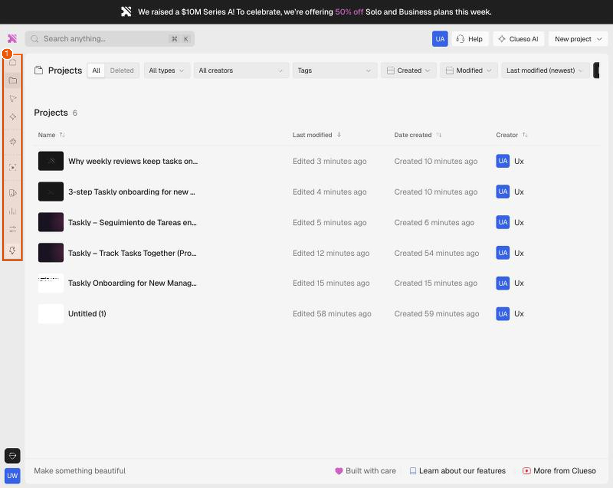
- 1N1Major
The collapsed sidebar is an unlabeled icon rail
Agent, Chats and Clueso AI use similar sparkle and pointer icons, and MCP's icon is unrecognizable. NN/g advises keeping text labels on vertical nav.
Fix: Show labels on hover as a fly-out, and use distinct icons for each item.
NN/g vertical navigation
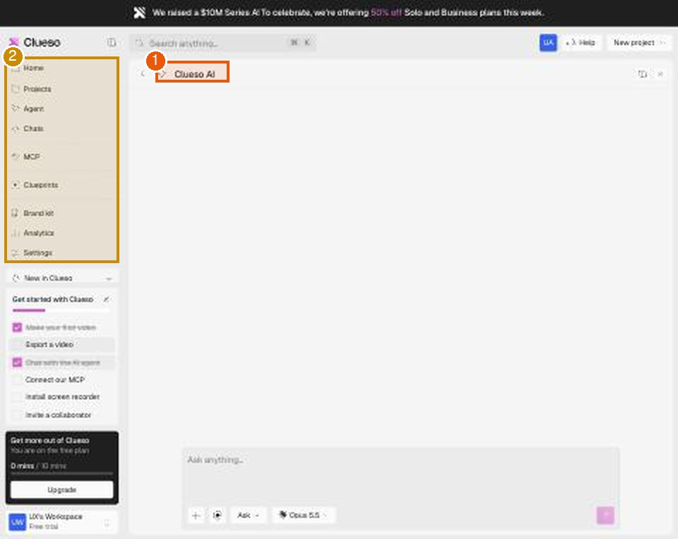
- 1N2Major
The AI chat page is an orphan in the navigation
Opened from the checklist or the Home prompt, it is titled "Clueso AI" while no sidebar item is highlighted. Users lose "where am I".
Fix: Highlight the parent item (Chats, or Create in the proposed nav) and add a breadcrumb.
Brown: front doors
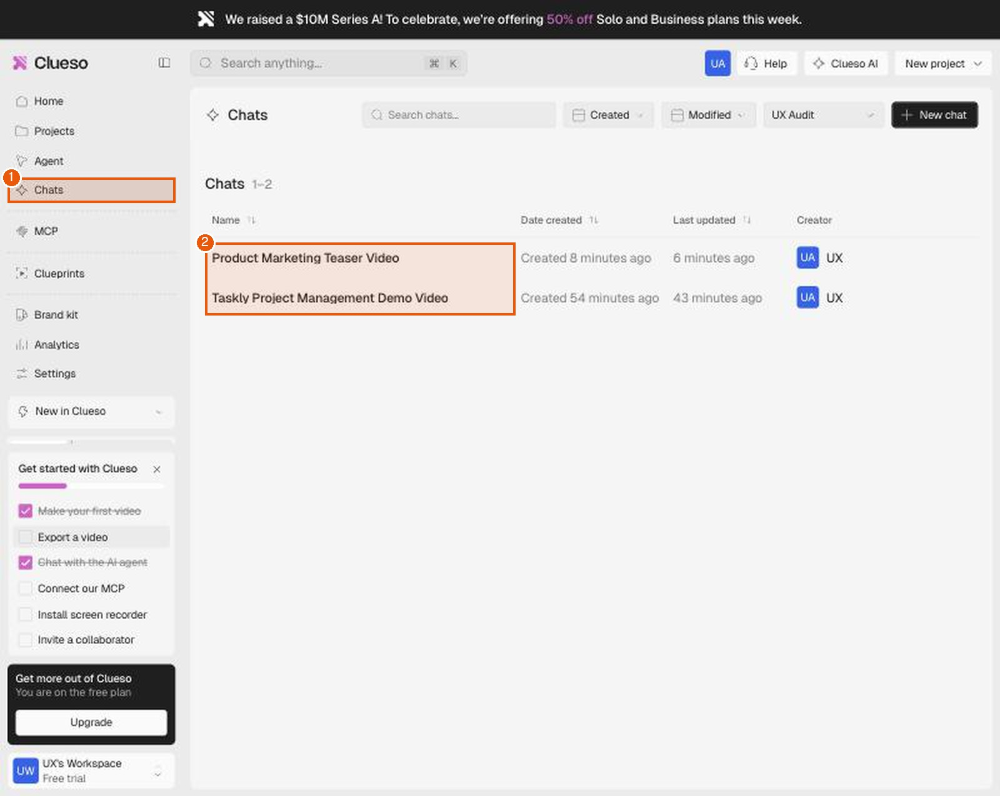
- 1N3Major
Chats and Projects list the same work under different names
"Taskly Project Management Demo Video" (chat) produced "Taskly – Track Tasks Together (Product Demo)" (project), and neither links to the other. Chats started inside the editor (the PDF ideas chat) don't appear in Chats at all.
Fix: Make the project the object, with its chats inside it; show the chat in the project's AI panel.
Brown: objects; Rosenfeld and Morville: organization
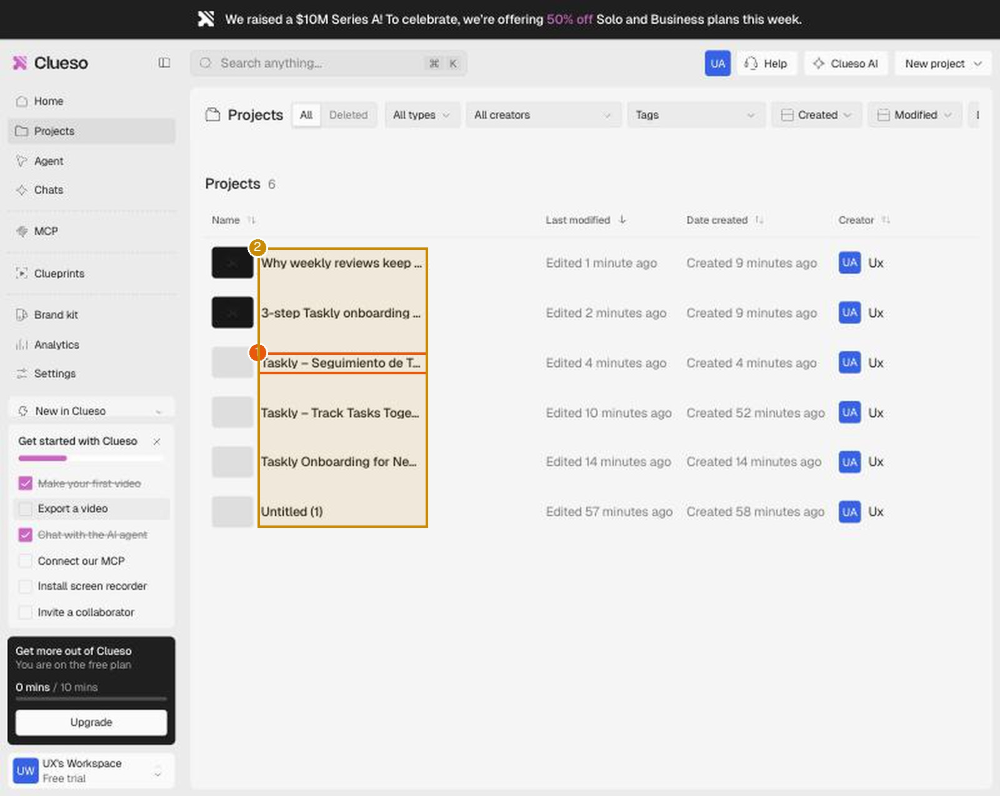
- 1N4Major
Language versions and AI spin-offs are loose projects
The Spanish copy ("Taskly – Seguimiento de T...") sits as an unrelated project with no language badge. The two videos generated from the PDF are separate projects with new names.
Fix: Group versions under their source with language and type badges.
Brown: multiple classification
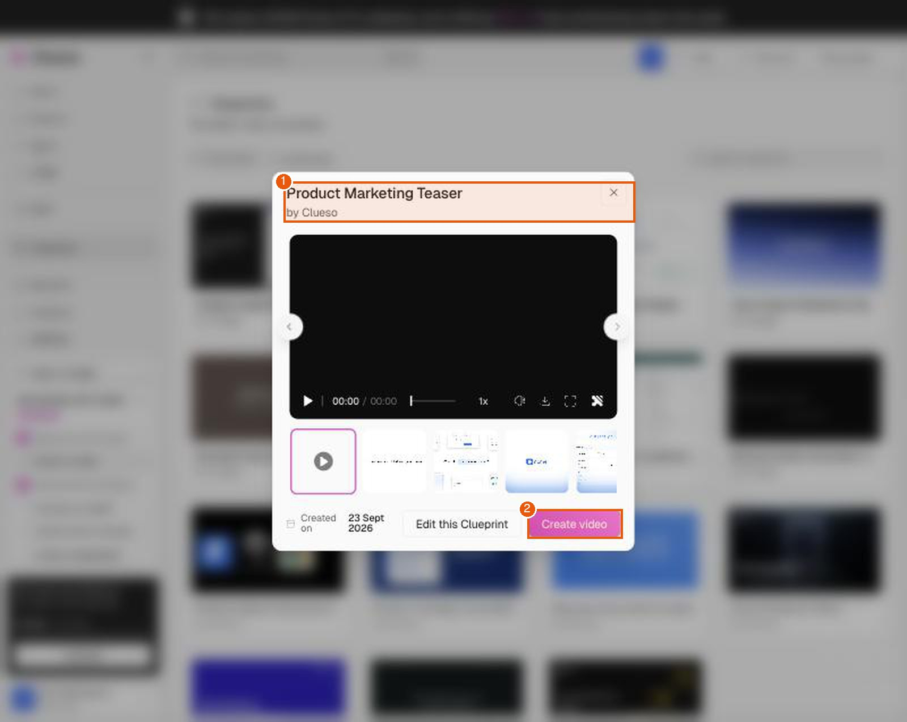
- 1N5Major
Clueprint detail doesn't say what you need or what happens next
No description (onboarding showed one), no required inputs (recording? script?), no cost. "Create video" sends a chat message at once. The help docs say you describe your video first.
Fix: Show the description, the inputs needed and a cost estimate, then a short brief form.
Brown: disclosure
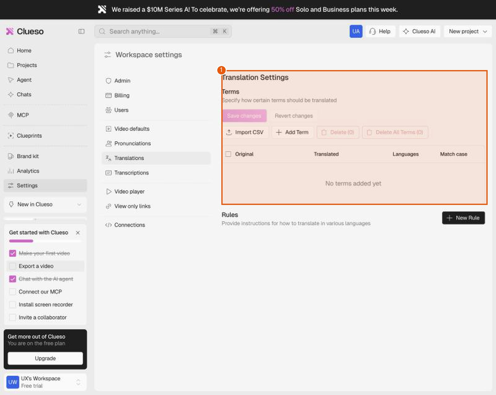
- 1N6Major
"Customize translation rules" throws away the translator setup
It navigates to Settings > Translations; going back shows Home with the dialog closed and the selection lost.
Fix: Open rules in a side sheet over the translator.
User control and freedom
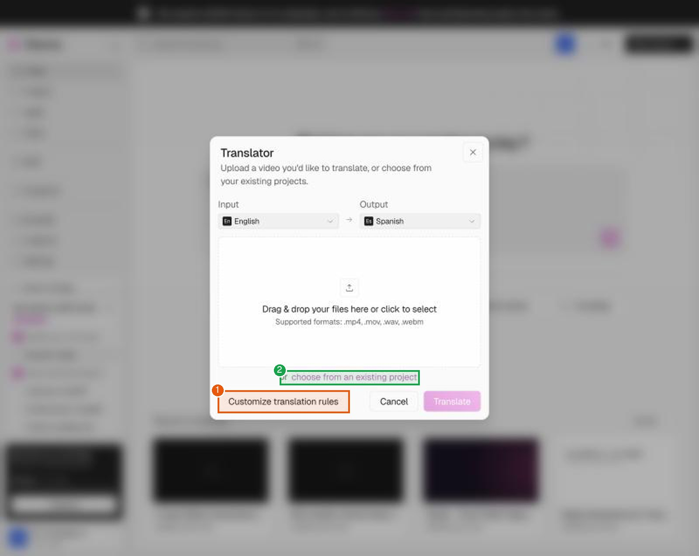
- 1N7Minor
Checklist and dialogs send people to scattered places
"Export a video" opens the Projects list with no hint of what to do next. The translator's rules link opens Settings. "Invite a collaborator" opens Settings > Users.
Fix: Each checklist item should open the exact action with a coach mark.
Match between system and real world

- 1N8Major
The SOP use case has no start option
"Step-by-step help article" opens a "Prompt hub" showing a raw AI instruction, then needs a typed request.
Fix: Add "Create guide" to the creation menu and generate the article automatically from every recording.
Time to value
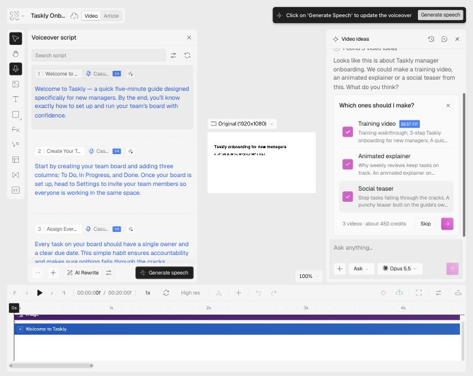
- 1N9Minor
AI ideas create new projects away from where you are
Picking ideas in the PDF project made two new projects; the current project stayed a plain slide video. This version shows a cost estimate, unlike the Home prompt.
Fix: Say "This will create 2 new projects" and link to them; use the same estimate everywhere.
Visibility of system status
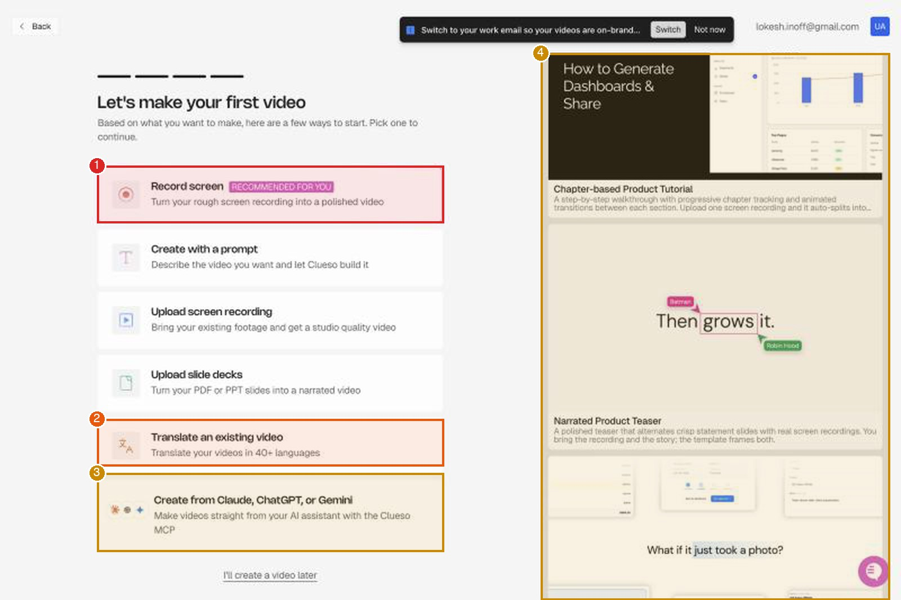
- 1N10Major
Motion graphics is a goal with no door
Onboarding offers "Motion graphics" as a goal, but no menu has an Animation start option.
Fix: Add it to Create, or drop it from onboarding goals.
Brown: choices

- 1N12Major
Search pads results and never says "no results"
Searching "on" lists "Untitled (1)" and "Taskly — Product Teaser" (1) with nothing highlighted; "xyzq" still returns 5 projects and "brand" returns Home. Navigation (2) is always listed first, even when a project is the better match. The empty panel is blank (screenshot 90). The frame itself is good: fixed 680 × 480, input pinned, scopes with p; f; n; a; prefixes, Tab to ask AI.
Fix: Show only real matches, ranked and highlighted, at most 5 per group with "Show all"; order groups by best match; show recent projects and quick actions when empty; an honest no-results state that offers Ask AI and Create.
Nielsen #6 recognition over recall; NN/g search results and no-results pages; Hick's law
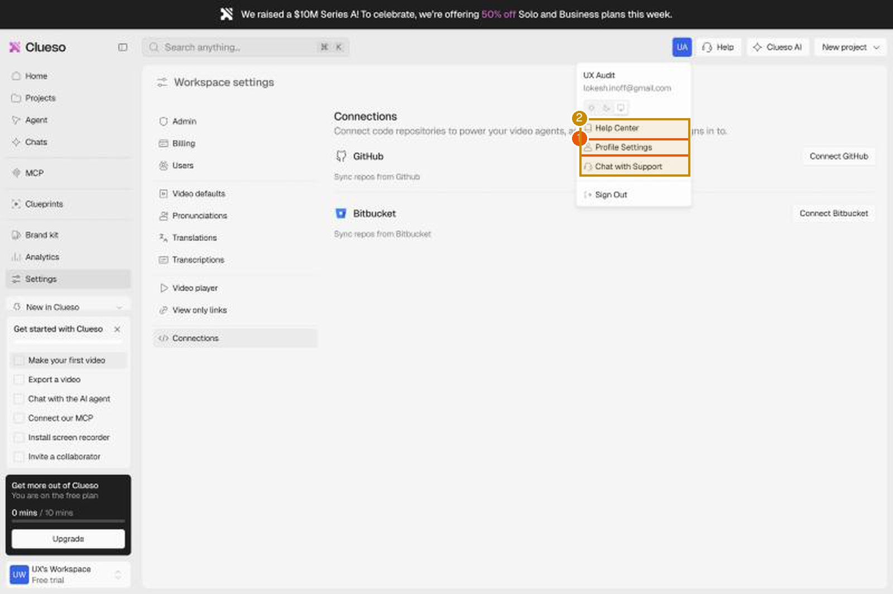
- 1N13Minor
Theme icons have no names
Light, Dark and System sit in the account menu as three icon-only buttons. They use role=tab with no aria-label or text, so screen readers announce three unnamed tabs, and sighted users must guess the third (a monitor) means System.
Fix: Label each option (or at least give it an accessible name) and treat the set as a radio group.
NN/g: icons need text labels; WCAG 4.1.2 name, role, value
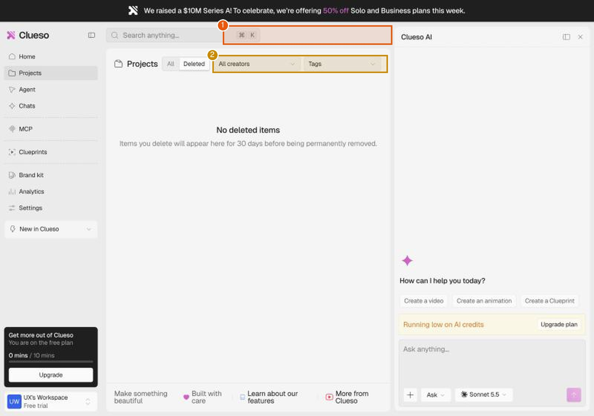
- 1N14Major
Clueso AI's view modes each break something
Floating (the default) covers the page's own controls: on Projects it hides the date filters and sort (screenshot 92). Sidebar docks the panel but pushes Help, the account menu and New project off screen (1) and drops the page's filters (2). Full screen navigates to /home/chat, so the page you were asking about is gone and no nav item is highlighted (screenshot 93). The chosen view resets every time the panel reopens.
Fix: Keep the three views but make side-by-side keep the top bar, expand full width in place, and remember the choice.
Nielsen #3 user control; Nielsen #1 visibility; NN/g: don't hide primary actions
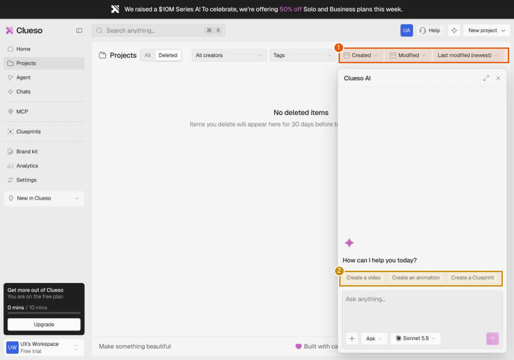
- 1N15Major
Clueso AI ignores where you are and what a reply costs
The same three chips (Create a video, Create an animation, Create a Clueprint) appear on every page, and none mention the project open behind the panel. Cost appears only as a "Running low on AI credits" banner (2) after the fact; a clarifying reply cost 13 credits. Escape on a menu inside the panel also closes the panel, and focus stays on the header button when it opens. The model menu lists nine vendor models (Opus, Sonnet, Astra, Sol, Luna, Terra, Kimi, GLM, DeepSeek) with no cost, and the default differs by surface (Sonnet 5.5 here, Opus 5.5 on Home). Screen readers hear the controls as "Director autonomy mode" and "Director model". View descriptions live only in hover tooltips.
Fix: Context line and page-specific chips; run button-able tasks directly without credits; show credits per reply before sending; Escape closes one layer at a time; move focus to the composer.
HAX G3 and G4 (time services to context, show relevant information); Shape of AI cost estimates; WAI-ARIA focus management
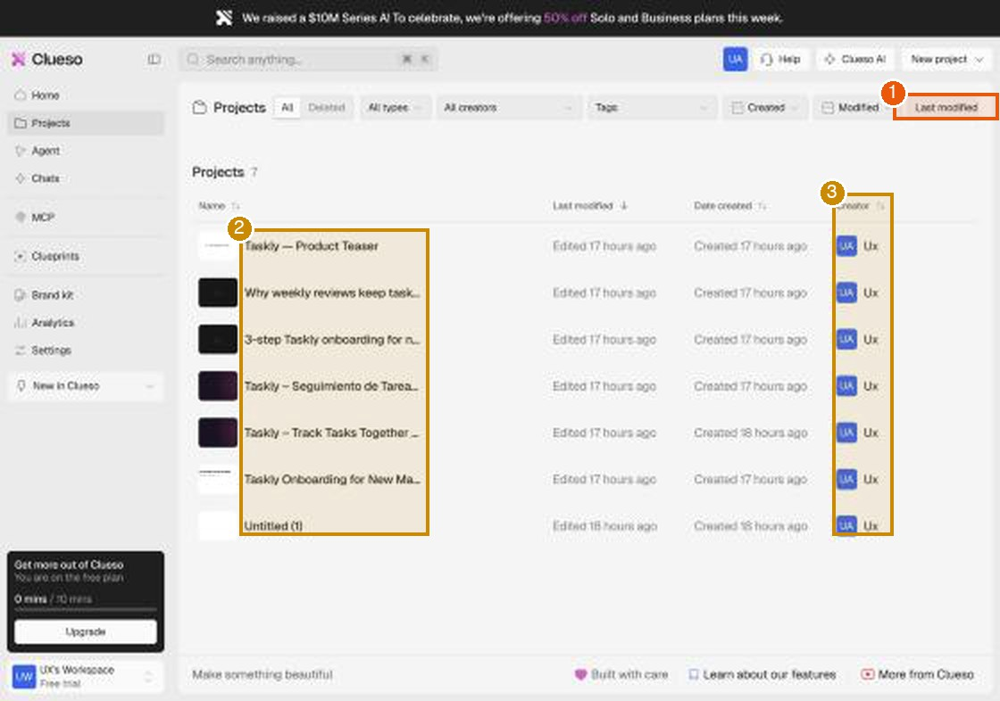
- 1N16Minor
Projects toolbar has nine controls and still hides one
Five filter dropdowns plus a sort menu push New folder off the edge (1); titles are cut to about 30 characters (2); sort exists twice, as a menu and as column headers (3). Row actions appear only on mouse hover, so keyboard and touch users can't see them. A one-person workspace still gets a Creator filter and column.
Fix: Sort on the headers only; one Filter button with chips; show the row menu on hover and keyboard focus; drop Creator for solo workspaces; keep Deleted (30 days), which works well.
Hick's law; Jakob's law (sortable headers); WCAG 2.1.1 keyboard
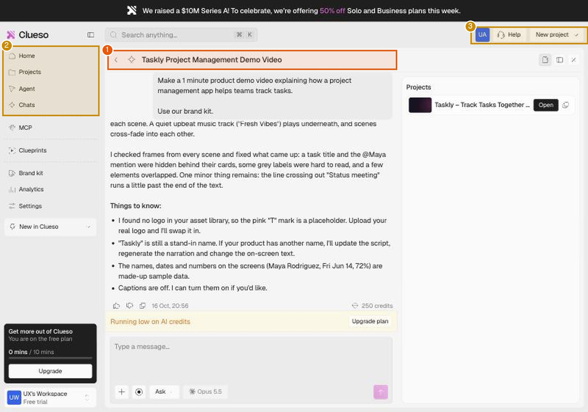
- 1N17Critical
One assistant, five doors, four names
The Home prompt, the Clueso AI panel, the Chats list and a full-page chat (1) are all the same agent, whose chats are titled "Getting Started With Director" and whose controls read "Director model". The Agent nav item is something else: an Enterprise sales page for automations. Inside a chat no nav item is highlighted (2) and the Clueso AI button disappears (3); it also disappears on Home. Switching an open chat to Floating drops you on Home with two composers, Home's prompt and the chat's (screenshot 97).
Fix: Give each surface one job: Create starts something new and hands off to the conversation; a Clueso AI page (replacing Agent and Chats) holds conversations in full, list beside conversation; the panel only helps with what is on screen on other pages, and hides on Create and the Clueso AI page, as Clueso already does. Call it Clueso AI everywhere and name the Enterprise automations Automations.
Nielsen #4 consistency; Dan Brown, objects and front doors; cognitive load

- 1N11Major
Invite dialog hides seat limits and role meaning
An email field, an Editor dropdown and Send invite. Nothing says Free has 1 seat or explains Editor vs Reviewer.
Fix: Show seats left and a one-line description of each role.
Visibility of system status
Redesign decision log
Every change in the redesign prototype, with the evidence behind it. Clueso means Clueso's own website, pricing table, help center or app copy. Observed means seen during this audit, with a screenshot. Research means a cited UX source. Decisions that rest only on inference are listed separately below as proposals to validate.
Create page: cognitive load, before and after
| What | Clueso today | Redesign |
|---|---|---|
| Things competing for attention on first view | 7 (sale banner, What's new card, checklist, upgrade card, survey, work-email toast, chat bubble) | 2 (the prompt and one next step) |
| Controls on the prompt | 5 (attach, record, mode, model, brand) | 3 (add, quality, brand), with mode moved to the confirm step |
| AI model choices | 6 vendor models, no costs | 2 quality levels with credit estimates |
| Ways to start shown | 4 chips + prompt, and different sets on 5 other surfaces | Prompt + 3, the same everywhere (Clueso's own four, minus the Enterprise-only agent recorder) |
| Prompt suggestions | Generic ("Facts about Lewis Hamilton") | 3, from the user's goals |
| Getting-started guidance | 6-item checklist collapsed in the sidebar | One next step with progress, on the page |
| Onboarding side panel | Decorative ("Make something beautiful") | A live preview of how your answers change Create, then "what happens next" |
| Cost shown before building | None on the Home prompt | Estimate next to Send and in the confirm step |
All decisions
| Screen | Decision | Evidence | Findings |
|---|---|---|---|
| Sign-in | Visible labels tied to inputs; Forgot password moved below the password so Tab goes email → password → Sign in. | ObservedResearch Observed: inputs had no label, name or autocomplete, and the link sat between them. Research: WCAG 1.3.1 and 2.4.3. | A1, A2 |
| Sign-in | One static customer quote instead of an auto-scrolling wall that included unrelated tiles. | ObservedResearch Observed: tiles titled "Meet Claude Cowork" and "How to create playlists in Spotify". Research: Laws of UX, cognitive load. | A3 |
| Sign-in | Terms and privacy stated at sign-up. | Observed Observed: no consent line on the form; links exist only on clueso.io. | A5 |
| Get started: one question | One question, and it says why it's asked. It replaces Clueso's 4 setup screens (profile, goals, name and role, workspace) and a forced first-video choice. | ObservedResearch Observed: 5 screens before Home. Research: NN/g onboarding, skip where possible and explain why you ask; Canva asks 1 question (Userpilot). | B1, B7, B12, O1 |
| Get started: one question | The reason is on the screen ("so we can show you a relevant example"), and the answer visibly changes the next screen and the Create page. | Research Research: Userpilot, answers must change the experience; NN/g, explain why data is needed. | O2, O3 |
| Get started: one question | Continue says why it is disabled ("Pick one to continue"), and "Not sure yet" is always there. | CluesoObservedResearch Observed: Clueso's "Looks good, continue" was disabled with no reason. Research: Nielsen #5 error prevention and #9 help users recognize problems; WCAG 3.3.2 labels or instructions. | B9 |
| Get started: what Clueso does | Show, don't ask: a before-and-after for your answer gives a real sense of the product in one screen, with nothing to build, spend or wait for. | CluesoResearch Clueso homepage: "Start with a rough recording... Clueso automatically applies the right workflow". Research: HAX G1 (make clear what the system can do); NN/g, onboarding is justified for novel features; Google PAIR, set expectations and onboard in stages. | B13, P1 |
| Get started: what Clueso does | The example shows both outputs, the video and the guide, because that is Clueso's core promise. | Clueso Clueso homepage: "Your video is ready. So is your documentation." Features listed: AI voiceovers, zooms, captions. | F14, N8 |
| Get started: what Clueso does | How it works in three lines, in the user's terms, so nothing that happens later is a surprise. | Research Research: Google PAIR mental models; NN/g, don't explain conventional UI, explain the new idea. | G5 |
| Create | Four ways to start, matching Clueso's own homepage: prompt (main), record, upload, Clueprint. Translate and guides are no longer separate start buttons. | Clueso Clueso homepage: "Upload what you already have", "Record the screen yourself", "Let the agent record for you", "Prompt your ideas". The agent-recorder is Enterprise (pricing), so it sits on the Agent page. Guides come with every video ("Your video is ready. So is your documentation."). Translate needs an existing video, so it lives on the project. | D13, N8, N10, P2 |
| Create | Clueso's full model list stays on every composer (Create, the panel, the Clueso AI page), as one control: the pill shows the vendor mark and model, and the menu groups the nine models by vendor (Anthropic, OpenAI, open models hosted by Baseten) with Clueso's own descriptions. The two models Clueso calls cost-efficient are tagged, and every estimate follows the chosen model. One remembered default everywhere. (An earlier Fast/Best switch removed a real choice and was reverted.) | CluesoResearch Clueso: "Director model" menu lists 9 models with no cost, defaulting to Sonnet 5.5 in chat and Opus 5.5 on Home; the help center says a smaller model costs about half per message; observed 250 credits for a video and 13 for a reply. Research: Nielsen #3 user control; chunking (grouped options); HAX G2 (make clear how well the system can do). | C1, C10 |
| Create | Brand stays off until you set one. | Observed Observed: the brand kit chip was on by default with a made-up kit, and "Use our brand kit." was added to the prompt. | C2, G1 |
| Create | The cost estimate and credits left show before sending. | CluesoResearch Clueso: its idea picker already shows "about 150 credits" per video; a 57-second video used 250. Research: Shape of AI cost estimates. | B20, E5, A3 |
| Create | The suggestion sits inside the empty prompt with a Tab key to accept it, and rotates. That's Clueso's own pattern, with suggestions from your onboarding answer instead of "Make a video explaining how Facebook works". It replaces a row of chips. It animates as Clueso's does: each character blurs out and the next suggestion blurs in, letter by letter, and the box glows pink while you type. | CluesoResearch Clueso: observed placeholder with a Tab hint; measured its promptCharVanish (400 ms, blur 4px, 6px drift) and promptCharMaterialize (450 ms, blur 10px, 20 ms stagger) keyframes and its focused border (pink-50, 0 0 10px 2px glow, 150 ms). Motion is off under reduced-motion. Research: NN/g prompt suggestions should be contextual; cognitive load (no extra row). | B19, P2 |
| Create | One "next step" in place of a 6-item checklist hidden in the sidebar; a head start shows 1 of 4 done. | Research Research: Appcues (3 to 5 items, complete on real events); endowed progress (Nunes and Drèze, 2006). | C4, O8, P6 |
| Create | One compact usage line (export minutes and credits) links to Plan and usage, replacing a two-meter card and an upgrade ad. | Research Research: Loom and Tango show free limits as one counter (competitor benchmark); cognitive load. | C5, C6 |
| Create | Clueso AI stays in the header on every page. | Observed Observed: the button disappeared on Home. | C12 |
| Create | Mode (Ask, Plan, Auto) moves behind Options in the build step instead of sitting on the prompt; no sale banner, survey, What's new card or footer links. | CluesoObservedResearch Clueso: mode labels from its own menu. Observed: seven attention-seekers on first load. Research: progressive disclosure; ProductLed, no pricing before value. | C3, C6, O9, P14 |
| Create | On the first visit, a one-line "how it works" strip and a prompt placeholder built from your onboarding answer. The user starts when they're ready. | Research Research: NN/g, contextual help over front-loaded tutorials; Userpilot, answers change the experience. | O2, P1 |
| Create | Search (⌘K) keeps Clueso's fixed 680 × 480 frame with the input pinned at the top, its scopes and p; n; a; prefixes, and Tab to ask AI. When empty it shows recent projects and quick actions instead of a blank panel. It lists only real matches, highlighted and ranked, with at most 5 per group and "Show all". When nothing matches it says so and offers Ask AI or Create. Old names (Chats, MCP, Styles) find their new home. | ObservedResearch Observed on web.clueso.io: the empty panel is blank; "xyzq" still returns 5 projects; "brand" returns Home; Navigation is always listed first. Research: Nielsen #6 recognition over recall; NN/g search results (relevance, highlight the query, a useful no-results page); Hick's law; WAI-ARIA combobox pattern for ↑↓ and Enter. | N12 |
| Create | A build keeps its status in the top bar on every page ("Building · 2 of 6"), and its finish toast has an Open button that waits 6 s and pauses on hover. Toasts are read out by screen readers; dialogs keep keyboard focus inside and return it when closed. | Research Research: Nielsen #1 visibility of system status; WCAG 2.2.1 timing, 4.1.3 status messages and 2.4.3 focus order; WAI-ARIA dialog pattern. | A5, G5 |
| Create | Clueso AI keeps Clueso's three views, names and icons (Sidebar, Floating, Full screen), and each now works: Sidebar (the default on wide screens) keeps the top bar intact, Floating floats, and Full screen expands in place without leaving the page. The choice is remembered, the header icon shows it, and each option's description is visible instead of hidden in a tooltip. The composer mirrors Clueso's row (+, check-in mode, model) with Quality in place of nine vendor models. The title becomes an editable conversation name, starters sit just above the composer, and the low-credit banner appears only under 150 credits. It names the page or video it is on, offers chips for that page, runs chips a button can do (translate, write the guide, record) directly with no credits, shows credits per reply before sending, attaches context with Clueso's + menu, moves focus to the composer, and Escape closes one layer at a time. | CluesoResearch Clueso (live, 17 Oct 2026): View mode Sidebar / Floating / Full screen; full screen routes to /home/chat; sidebar hides New project; same 3 chips everywhere; Escape on a menu closes the panel; a reply cost 13 credits. Research: HAX G3, G4; Shape of AI cost estimates; Nielsen #3; WAI-ARIA. | N14, N15 |
| Agent | Three jobs, three places. Create starts something new and sends you to the conversation; this page (was Agent) is where conversations live in full, as a list beside the open conversation, where you reply, approve plans and see what got built; the Clueso AI panel only helps with what is on screen while you work elsewhere. The panel and its button never appear on Create or here, as in Clueso, so there is never a second composer. | CluesoResearch Clueso (live, 17 Oct 2026): one agent behind five doors and four names (Home prompt, Clueso AI, Chats, a full-page chat, Director); the button hides on Home and in chats; Agent is an Enterprise sales page. Research: Nielsen #4 consistency; Dan Brown, objects and front doors; cognitive load (one composer at a time). | N17, D1, D2, N3 |
| Agent | Enterprise automations (record for you, keep videos up to date) are named Automations, not Agent, and are listed once here, where they act. | Clueso Clueso pricing: "Clueso Agents for auto-recording and updating videos" is an Enterprise product, separate from creating a video from chat (Free). | D1, N17 |
| Agent | Included on Free is stated first: create from a brief, and use it from Claude, ChatGPT or Cursor. | Clueso Clueso pricing: "Create video from chat" and "Clueso MCP" are included on Free. | D1, I3 |
| Agent | Each conversation shows its status and the credits it used. | Clueso Clueso: chats show a per-message credit count (for example, 13 credits). | N15 |
| Agent | Hierarchy on this page: what needs you is grouped first, and on wide screens it opens on its own, so the main area is never an empty card. Finished conversations carry no coloured badge; only items that need action do. Search sits at the top of the list, as in Clueso's Chats. Plan information moved from a full row under the title to a footnote, and the single New video button is the only way to start. | CluesoResearch Research: list–detail pattern (Gmail, Slack open the most relevant item); NN/g visual hierarchy, colour signals priority; Nielsen #8 minimalist design (one primary action). Clueso: Chats has a search box. | N17 |
| Analytics | A workspace-wide dashboard across all videos, matching Clueso's help center. | Clueso Clueso help center (Analytics): project filter, date range, impressions, plays, play rate, impressions vs plays chart, top content table with CSV export, breakdown by location, search analytics. | D7 |
| Analytics | On Free, a labeled sample of the real dashboard instead of a blank paywall. | Clueso Clueso pricing: "Viewership analytics" is Business and Enterprise. | D8 |
| Analytics | Pick one video for its retention and drop-off; project pages link here. | Clueso Clueso help center: audience retention appears when one project is selected. | N4 |
| Analytics | A lock on the sidebar item, so the paywall isn't a surprise. | Research Research: Dan Brown, disclosure. | D7, I3 |
| Projects | Language versions and AI spin-offs are grouped under their source. | Observed Observed: the Spanish copy and the two PDF spin-offs were loose, unlinked projects. | N4 |
| Projects | Rows show only what helps you pick: name, type, guide, a version count, length and when it was edited. The owner and versions columns are dropped for a one-person workspace. | Research Research: cognitive load; NN/g, show information when it supports a decision. | H7, N3 |
| Projects | One Filter button replaces seven filters. | Observed Observed: the filter bar clipped New folder at 1294 px. | H6, H7 |
| Projects | Search filters projects, their language versions and spin-offs as you type, bolds the match, and says so when nothing matches. | ObservedResearch Observed: the prototype's search box did nothing. Research: NN/g search (highlight the query, a useful no-results page). | N4, N12 |
| Projects | Every Projects ability Clueso has, in fewer controls: sortable Name, Length and Edited headers instead of a sort menu that repeats them; one Filter with removable chips; a row menu (copy link, rename, duplicate, pin, move, delete) that shows on hover and keyboard focus; titles that are real links for opening in a new tab; and a Deleted tab that keeps projects 30 days, with Undo on delete. | CluesoResearch Clueso (live, 17 Oct 2026): All/Deleted tabs (30 days), 5 filters, 8 sort options, a 9-item row menu shown on hover only, New folder clipped. Research: Jakob's law (sortable headers); Hick's law; NN/g, undo over confirmation; WCAG 2.1.1 keyboard. | N16 |
| Project page | One project page with three things beside the video: its guide, its versions (languages and spin-offs together), and a link to its analytics. | Research Research: Dan Brown, objects (one home per object); cognitive load, fewer boxes. | N3, N4 |
| Project page | Scene-by-scene progress with an estimate; leave and get notified. | ObservedResearch Observed: a 9 min 37 s build with only elapsed time. Research: Nielsen "Slow AI" three-layer progress; NN/g, waits over 10 s need percent-done. | G5, A5, A10 |
| Project page | "Generate article" when a video has no article yet. | CluesoObserved Clueso pricing: "Generate step-by-step guides/documentation" is on Free. Observed: articles were blank, behind a Prompt hub. | F14, N8 |
| Project page | A breadcrumb shows where you are. | Research Research: Dan Brown, front doors. | N2 |
| Project page | When a build finishes, the project page leads with "Your video is ready" and Share link, with the export-minute cost in the same line. | Research Research: peak-end rule (the finished video is the peak); Lenny's Newsletter: activation is the first shared link; Nielsen #1 visibility of system status. | P10, A5 |
| Library | Clueprints, clip templates, components, brand kit and media live together. | Clueso Clueso pricing groups Clip templates, Components and Clueprints under "Brand Management & Controls", and the Enterprise card lists "Branding: Reusable end-to-end video templates, Save and reuse components". | D11, I7 |
| Library | Plan locks match pricing: clip templates and components are Business; community Clueprints are free; custom Clueprints are Enterprise. | Clueso Clueso pricing table. | E3 |
| Library | The Clueprint detail says what you need, and a short brief replaces a paid clarifying chat. | Observed Observed: "Create video" sent a chat that charged 13 credits to ask for the brief. | N5 |
| Integrations | Things you set up once (extension, MCP, code connections) live in one place at the bottom of the sidebar. | CluesoResearch Research: Microsoft settings guidance, rarely changed items go last. Clueso: GitHub and Bitbucket "power your video agents" (Connections page). | D10 |
| Settings | One Settings area, grouped like Clueso's own pricing: workspace and admin, billing, content, sharing. | CluesoObserved Clueso pricing groups: "Admin & Workspace Control", "Sharing & Analytics". Observed: settings were split across three places. | D14, E10 |
| Settings | No domain-joining option for personal email domains. | Observed Observed: "Anyone with a gmail.com email address" was offered. | E1 |
| Settings | Limits match the pricing table; the credit table uses only Clueso's own numbers. | CluesoObserved Clueso pricing: Free has 1 user, 10 min, 10 articles, 1,000 credits. Observed: Usage showed 1/4 seats. | E3, E4, E6 |
| Settings | Invite explains seats and roles per plan. | Clueso Clueso pricing: Business includes 2 editors plus roles and permissions; reviewer seats are Enterprise. | N11 |
| Settings | The only admin can't "Leave"; the real options are explained. | Observed Observed. | E8 |
| Settings | A dark theme built from Clueso's own dark tokens, with Light, Dark and System in the account menu (where Clueso puts it) and in Profile. Clueso's three icons stay, but each gets a visible label and the set works as one radio group with arrow keys. | CluesoResearch Clueso: measured its .dark tokens (canvas grey-90, surface grey-80, text grey-0, brand text pink-40) and its account-menu icons, which are role=tab buttons with no accessible names. Research: NN/g, icons need text labels; WAI-ARIA radio group; WCAG 1.4.3 contrast in both themes. | N13 |
Proposals that still need validation
| Proposal | Why it isn't proven yet | How to validate |
|---|---|---|
| Record a browser tab without installing the extension | Clueso requires the Chrome extension today. Browsers can capture a tab natively (the Screen Capture API), so this is technically plausible, but engineering must confirm the editor can work with it without click data. | Engineering spike; compare activation with and without the install step |
| "Quality: Fast / Best" instead of a list of six models | Based on Clueso's own note that a smaller model costs about half per message. The quality difference between models hasn't been measured. | Internal benchmark of output quality and cost per model |
| Make the role question optional | Nothing visible changes with role today, but Clueso may use it for sales routing. | Ask the growth team; check whether role predicts activation |
| Merge Chats into Agent, and group Clueprints, templates, components and brand kit as Library | The grouping follows Clueso's own pricing groups and help-center wording, not tested user mental models. | Open card sort (15+ participants), then tree test of old vs new nav |
| Show a labeled sample Analytics dashboard on Free | It should reduce the blank-paywall problem, but its effect on upgrades is unknown. | A/B test: sample dashboard vs current paywall, measuring upgrade clicks |
| One "what to make" question (4 jobs) in place of Clueso's 7-goal survey | The 4 jobs cover Clueso's goals, but Clueso may use the 7 goals for segmentation or sales. | Check with growth; compare activation between the two flows |
| Show a before-and-after example instead of building in onboarding | Should make onboarding faster and clearer, but users may still want to try with their own content right away. | Compare time to first build and activation: example-first vs build-first |
| A finished sample project in onboarding | Clueso doesn't offer one today. It follows NN/g's empty-state advice and Loom's "get inspired" fork. | Usability test: do sample-first users go on to make their own video? |
| Notify people when a build finishes | Clueso shows only elapsed time today. Notifications are a common pattern for long jobs (Nielsen, "Slow AI") but aren't built. | Engineering scope; measure how many builds are abandoned |
| Group language versions and AI spin-offs under their source project | Observed as loose projects; grouping is a design inference. | Usability test task: "find the Spanish version" |
Sign-up and sign-in
The forms are short and offer Google and SSO, which is right for a B2B tool. The problems are in the details: accessibility, a nag about work email, and a testimonial wall that competes with the form.

Sign-in page at 1294 px wide
- 1A1Minor
Forgot password link interrupts the keyboard path
The link sits between the Password label and its field, so Tab goes email, Forgot password, password. Neither input has a label element, a name or an autocomplete value, so screen readers announce only the placeholder and password managers have less to go on.
Fix: Associate visible labels with inputs, add autocomplete="email" and "current-password", and move the link below the field.
Accessibility, error prevention
- 2A2Minor
Password reveal button is unreachable
The eye button has no accessible name and tabindex -1, so keyboard users can't toggle it.
Fix: Give it aria-label "Show password" and put it back in the tab order.
Accessibility
- 3A3Minor
Auto-scrolling wall competes with the task
The right half scrolls testimonials and showcase videos, including tiles titled "Meet Claude Cowork" and "How to create playlists in Spotify", which read as other companies' products. Every quote is duplicated in the markup, so assistive tech reads it twice. Errors rely only on the browser's native bubbles.
Fix: Use one static proof point, pause motion by default, hide the duplicate loop from assistive tech, and show inline error text.
Aesthetic and minimalist design
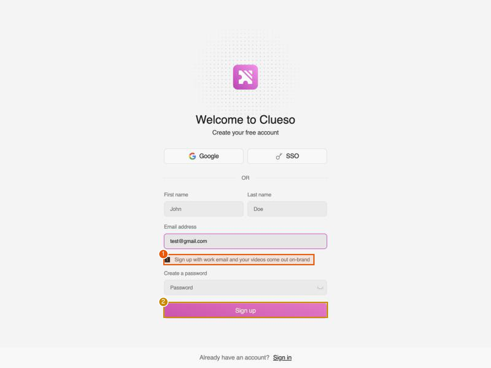
Sign-up after typing a gmail.com address
- 1A4Major
Work-email warning shifts the form
A hint appears under the email field and pushes the password field down mid-entry. The same message returns later as a persistent toast on every onboarding step.
Fix: Reserve space for helper text, show it once, and explain the benefit (brand kit from your company site) instead of implying a personal email is wrong.
User control and freedom
- 2A5Minor
No terms or privacy notice at the point of sign-up
The sign-up button has no "By signing up you agree to..." line or links. Legal links exist only on the marketing site.
Fix: Add a one-line consent notice with links under the button.
Help and documentation
Onboarding
Onboarding has four visible steps plus a hidden fifth (Complete your profile). It asks for the user's name twice, takes 20 seconds to load, and its recommended path ends with a demand to install a browser extension.
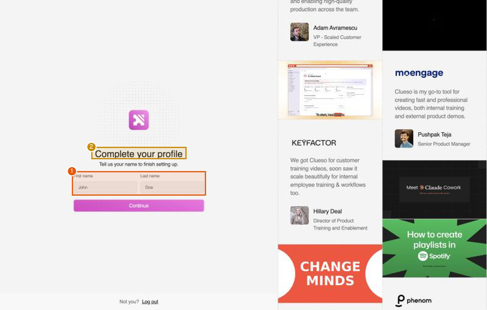
Shown right after signing in with Google
- 1B1Major
Asks for a name the identity provider already supplied
The account was created with Google (Profile settings later says "Password is managed by Google"), yet the fields are empty. Onboarding step 2 then asks for first and last name again.
Fix: Prefill from the Google profile and drop this screen. Keep one name field, in step 2 only, prefilled.
Recognition rather than recall
- 2B2Minor
The URL stays on /login
The browser shows accounts.clueso.io/login while the page says Complete your profile, so refresh and back behave unexpectedly.
Fix: Give the step its own route.
Visibility of system status
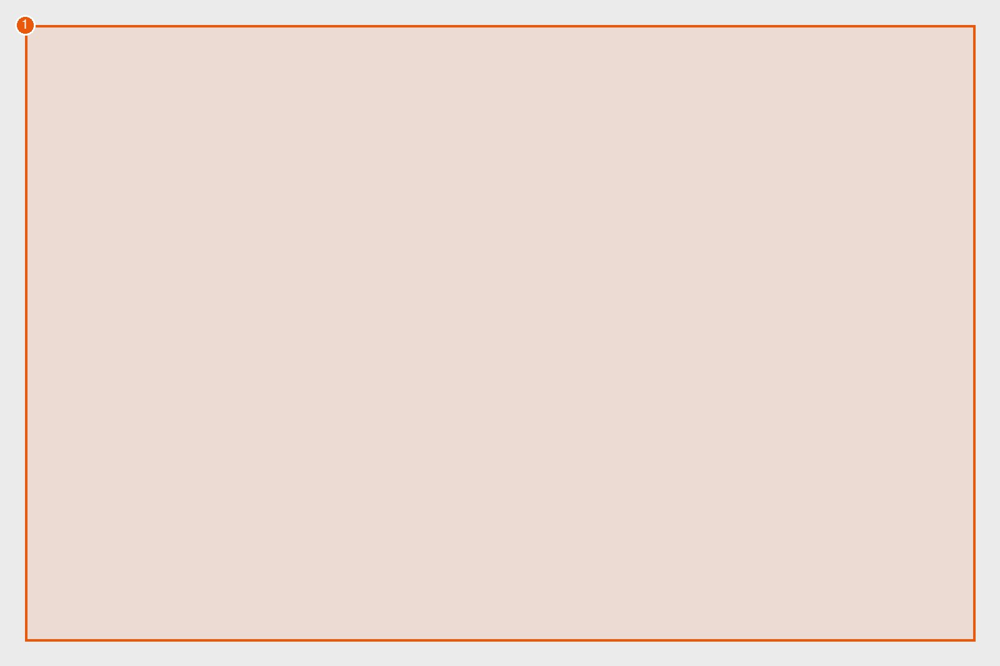
About 10 seconds after clicking Continue
- 1B3Major
Blank screen, then a pulsing logo, for about 20 seconds
The first app load showed an empty grey page, then a logo. About 930 network requests had fired by the time the goals screen appeared.
Fix: Show a branded skeleton with a status line, and split the bundle so the onboarding route loads first.
Visibility of system status
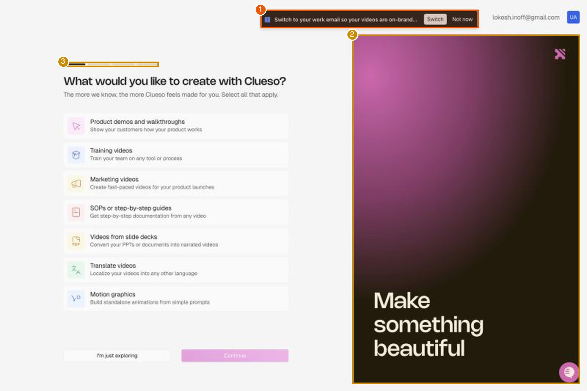
Step 1 of 4: goals
- 1B4Major
Work-email toast follows the user everywhere
The truncated toast "Switch to your work email so your videos are on-brand..." sits above every onboarding step and stays on top of modal overlays.
Fix: Ask once, inside the brand step, with a clear Skip.
Aesthetic and minimalist design
- 2B5Minor
40% of the screen is decoration
The "Make something beautiful" panel carries no information on this step.
Fix: Use the space to preview what each choice unlocks.
Aesthetic and minimalist design
- 3B6Minor
Progress bar has no visible text
"Step 1 of 4" exists only for screen readers.
Fix: Show the step count visually.
Visibility of system status

Step 2 of 4: profile
- 1B7Major
Second request for the user's name in under a minute
First and last name again, prefilled this time from the previous screen.
Fix: Merge with the Complete your profile screen, or remove both.
Consistency
- 2B8Minor
Role list is long and unordered
13 roles in no clear order, with mixed naming ("Customer education & training" next to "Learning and development", plus jargon like "CXO").
Fix: Group roles by team, order them by frequency, and keep "Other" last.
Match with the real world
- 3B9Minor
"Looks good, continue" is disabled with no reason given
The button reads as ready but does nothing until a role is picked.
Fix: Mark the role as required, or make it optional.
Error prevention
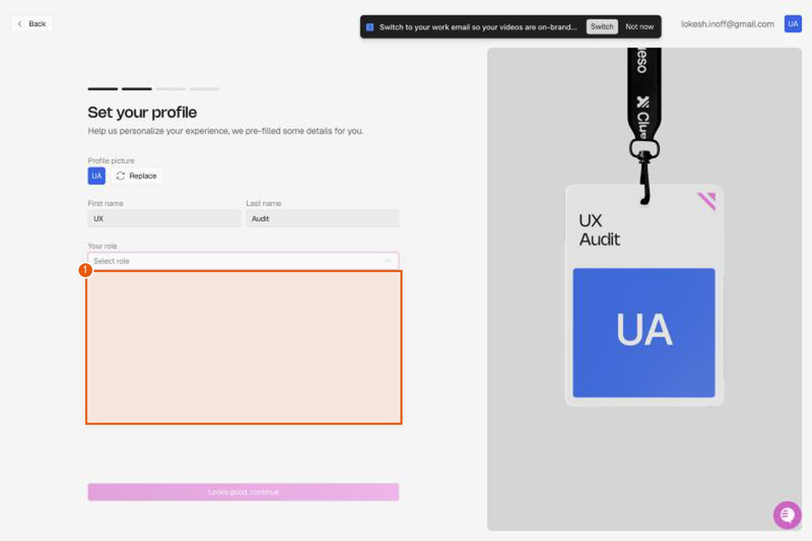
Role dropdown, first second after opening
- 1B10Major
Dropdown opens empty
The menu opens as a blank white box and fills in after 1 to 2 seconds.
Fix: Ship the role list with the bundle; it is static.
Visibility of system status
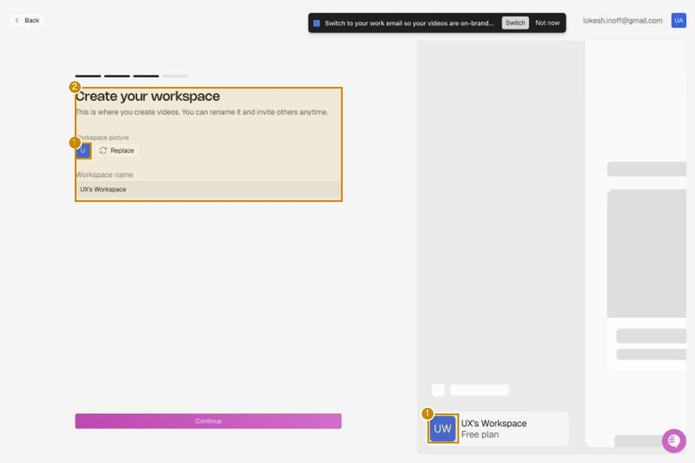
Step 3 of 4: workspace
- 1B11Minor
Avatar shows U on the left and UW in the preview
The same workspace gets two different initials.
Fix: Use one initials rule everywhere.
Consistency
- 2B12Minor
Workspace naming is premature for a solo free user
The name is already prefilled and changeable later, so this step adds a click without adding value.
Fix: Create the workspace silently and offer naming when the user invites someone.
Flexibility and efficiency
Step 4 of 4: first video
- 1B13Critical
The recommended path is a dead end inside the product
"Record screen, RECOMMENDED FOR YOU" opens an install modal (next figure) that sends the user to the Chrome Web Store at the final onboarding step.
Fix: Recommend a path that works in the browser right now (a prompt prefilled from the chosen goals, or a sample project) and offer the extension when the user first records.
Time to value
- 2B14Major
Three different language counts
Onboarding says "40+ languages". The marketing home page says 80+ in one section and 150+ in another.
Fix: Pick one verified number and use it everywhere.
Consistency
- 3B15Minor
Six choices, two of them irrelevant to a new user
"Translate an existing video" needs a video the user doesn't have yet. "Create from Claude, ChatGPT, or Gemini" is a developer integration.
Fix: Show the two or three options that match the chosen goals, and move the rest behind "More ways to start".
Hick's law
- 4B16Minor
The right panel is the Clueprint gallery, unlabeled
Template cards appear with no heading, so it is unclear whether they can be picked or how they relate to the options on the left.
Fix: Label it "Or start from a Clueprint" and make the cards selectable.
Recognition rather than recall

After clicking the recommended option
- 1B17Critical
Install wall at the moment of first value
"Install the free Clueso extension... then come back here" breaks the session at the riskiest point of activation.
Fix: Allow browser-tab recording through getDisplayMedia, or skip ahead to the editor with a sample recording while the extension installs.
Time to value
- 2B18Minor
Work-email toast stays above the modal overlay
The toast isn't dimmed with the rest of the page.
Fix: Fix the layering order.
Visual hierarchy
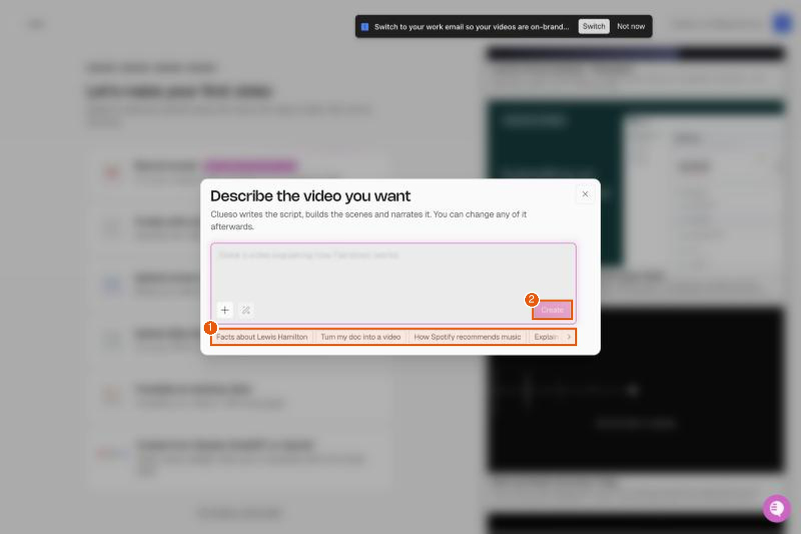
"Create with a prompt" from onboarding
- 1B19Major
Suggestions ignore what the user just said
I chose Product demos and SOPs as a Product manager. The chips offer "Facts about Lewis Hamilton" and "How Spotify recommends music".
Fix: Generate the chips from the onboarding answers ("Walk through your product's sign-up flow", "Turn a process into an SOP").
Personalization
- 2B20Major
No cost shown before Create
One prompt-to-video run later cost 250 credits, a quarter of the monthly allowance. Nothing here says so.
Fix: Show an estimate next to Create ("About 100 credits, 900 left").
Visibility of system status
Home and first run
Home leads with a single prompt box, which is a good choice. Around it are up to seven competing elements, and two defaults that quietly shape every video the user makes: the model and the brand kit.
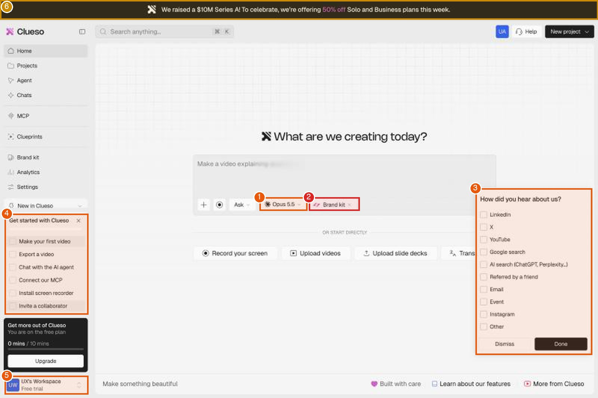
Home a few seconds after onboarding
- 1C1Major
A model picker for people making videos
The default is Opus 5.5. The menu (next figure but one) lists six LLMs with vendor taglines and no cost, speed or quality guidance.
Fix: Replace with "Quality: Fast / Best", show the credit estimate for each, and keep the raw model list under Advanced.
Match with the real world
- 2C2Critical
Brand kit is on by default, and it is made up
The brand kit chip is on by default. For a gmail.com sign-up, the kit was built from gmail.com: a placeholder pink logo and a pink accent (next figure). The AI added "Use our brand kit." to my prompt and planned the video in "brand pink (#D43F8C)".
Fix: Never auto-build a brand kit from a public email domain. Keep the chip off until the user confirms a brand.
Error prevention
- 3C3Major
Survey interrupts the first session
"How did you hear about us?" pops up within seconds and covers the Translate button.
Fix: Ask after the first export, or inside onboarding as an optional question.
User control and freedom
- 4C4Major
Get-started checklist is hidden and loosely defined
It sits collapsed near the bottom of the sidebar under a promo card. Install screen recorder comes after Export a video. Make your first video was ticked by a blank 6-second project.
Fix: Put the checklist on Home, order it by dependency, and tick Make your first video only when a video has content and has been played.
Visibility of system status
- 5C5Major
One plan, three names
The sidebar says "Free trial", the upgrade card says "You are on the free plan", and Billing says "Free". A trial implies an end date; this plan has none.
Fix: Use "Free plan" everywhere.
Consistency
- 6C6Minor
Seven things asking for attention
Series A sale banner, What's new card, checklist, upgrade card, survey, work-email toast and a floating chat bubble, all on the first view.
Fix: On day one, show at most the checklist and one upgrade touchpoint.
Aesthetic and minimalist design
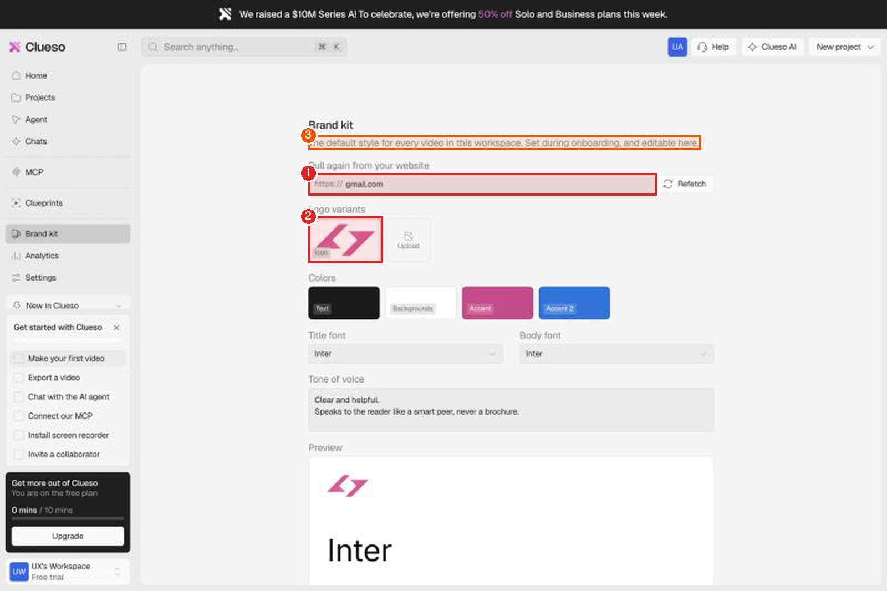
Brand kit, never set by the user
- 1C7Critical
"Pull again from your website: gmail.com"
The kit was scraped from the email domain. Every company on Gmail, Outlook or Yahoo gets the same kind of junk kit.
Fix: Detect public email domains and leave the kit empty with an "Add your website" prompt.
Error prevention
- 2C8Critical
A placeholder logo presented as the user's own
The pink chevron mark will appear in intros and outros of first videos.
Fix: Show no logo until one is uploaded or confirmed.
Trust
- 3C9Major
"Set during onboarding", but onboarding never asked
No onboarding step mentioned brand, colors or a website.
Fix: Add an optional brand step to onboarding, or change the copy to "Auto-filled. Review it."
Visibility of system status
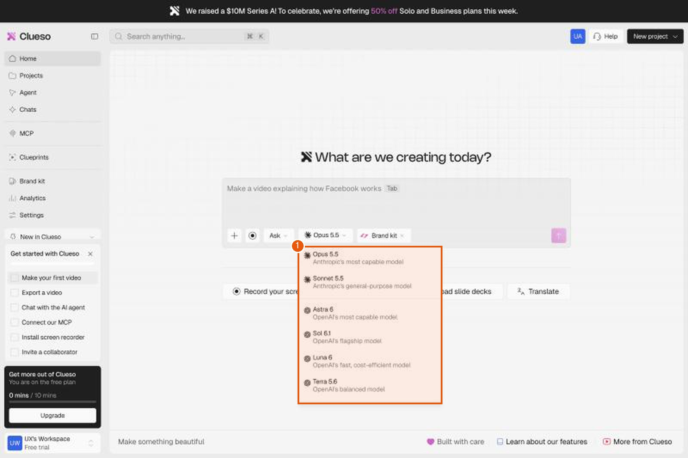
Model menu on the Home prompt
- 1C10Major
The most expensive model is the default, and the menu shows no costs
Opus 5.5, Sonnet 5.5, Astra 6, Sol 6.1, Luna 6 and Terra 5.6, each described by vendor ("Anthropic's most capable model"). The help docs say a smaller model costs about half per message, but this menu doesn't say so.
Fix: Offer two or three outcome-based options with a credit estimate for each.
Match with the real world
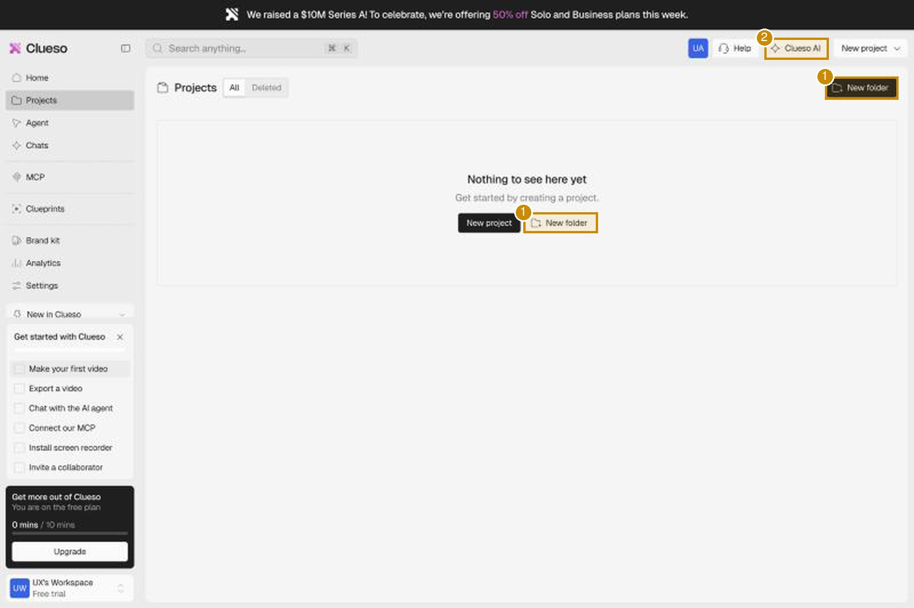
Projects, empty
- 1C11Minor
New folder appears twice on an empty page
A folder is the wrong first action when there is nothing to put in it.
Fix: Lead the empty state with New project and the start options.
Minimalism
- 2C12Minor
The header changes between pages
The Clueso AI button is absent on Home but present on Projects, so the header shifts as the user navigates. The browser tab title stays "Clueso Platform" everywhere, and showed a stale "Untitled (1)" on Home.
Fix: Keep the header stable and set a per-page document title.
Consistency
Information architecture and navigation
The sidebar mixes everyday work (Projects), developer setup (MCP), a sales page (Agent), a paywall (Analytics) and assets (Clueprints, Brand kit) at one level. AI is spread over six surfaces, and settings over three.

Agent, from the main sidebar
- 1D1Major
A primary nav slot spent on a sales page
Agent opens a marketing page whose main action is Book a demo. The feature is Enterprise-only, but free users see it as the third item in the nav.
Fix: Remove it from the nav for plans that can't use it. Surface it as an upsell card inside the AI panel or Projects.
Match between the system and user goals
- 2D2Major
Agent, Chats and Clueso AI blur together
The checklist asks the user to "Chat with the AI agent", which actually means Chats, not Agent.
Fix: Use one name for the AI you talk to, and a different one for the Enterprise automation.
Consistency
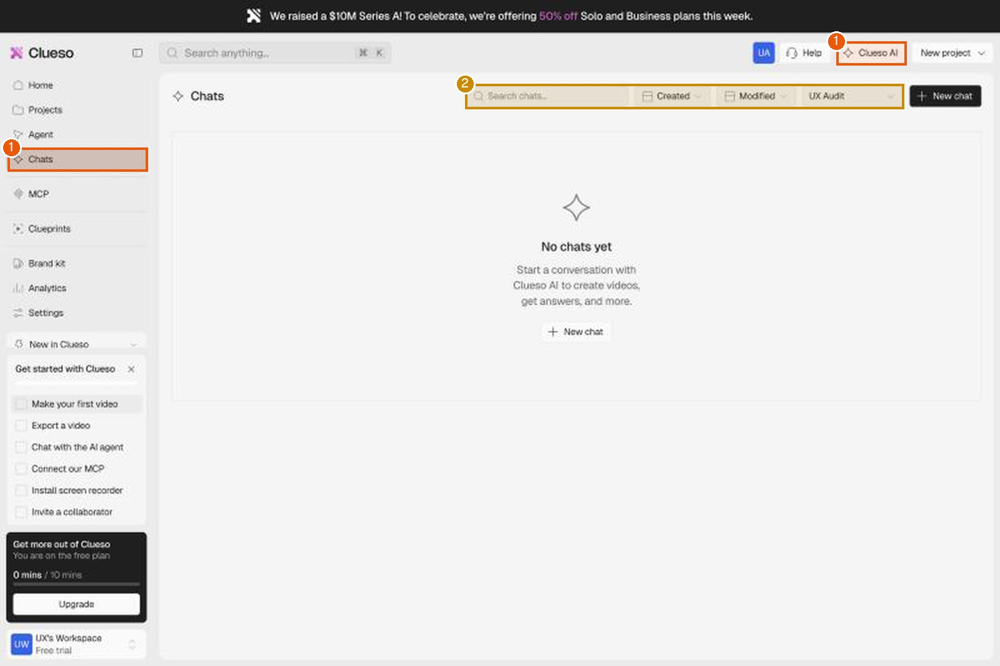
Chats
- 1D3Major
AI lives in six places
Home prompt, Chats, the header Clueso AI panel, Agent, the editor chat and the Article copilot. Each looks a bit different; the article version has no model or mode picker.
Fix: Use one AI panel component everywhere. Chats becomes that panel's history, reachable from inside it.
Consistency
- 2D4Minor
Search and three filters on an empty list
Filters only help when there are things to filter.
Fix: Hide filters until there are about 10 items.
Minimalism
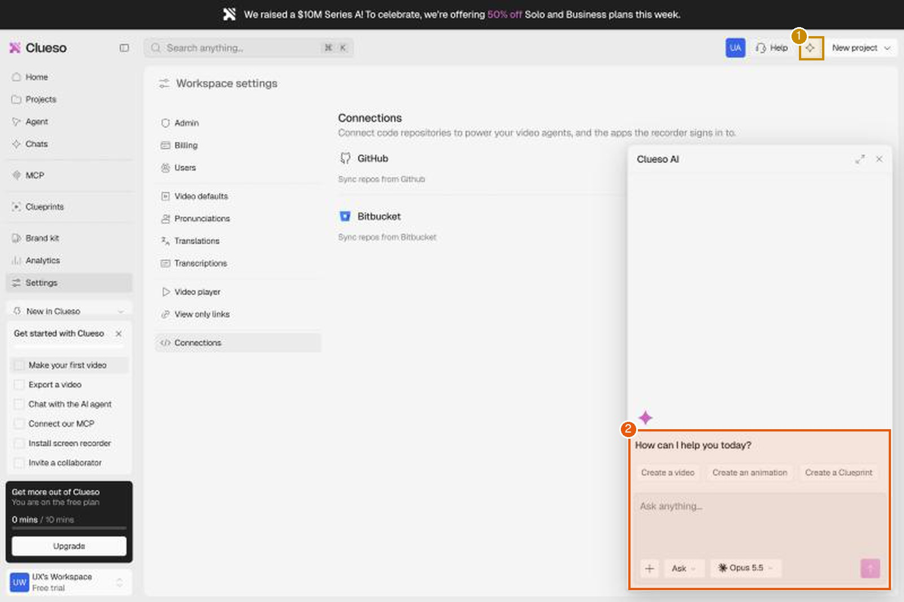
Header Clueso AI panel over Settings
- 1D5Minor
The header button collapses to an icon when the panel opens
The header layout shifts.
Fix: Keep the label, or show an active state.
Consistency
- 2D6Major
Duplicate of the Home prompt
Same input, mode and model controls. Pressing Esc on its dropdown closed the whole panel. Internally the controls are labeled "Director autonomy mode" and "Director model", an internal codename.
Fix: Make Esc close only the open menu, and use user-facing names in accessible labels.
User control and freedom
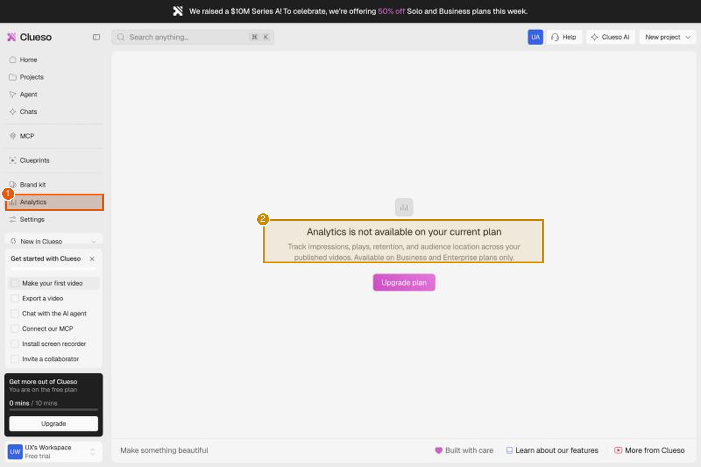
Analytics on the free plan
- 1D7Major
Primary nav item is a locked page
Analytics is Business and Enterprise only. The Video player settings page behaves the same way.
Fix: Show a lock badge in the nav so users know before clicking, or move Analytics under Projects as a tab.
Visibility of system status
- 2D8Minor
The upsell doesn't show what the user would get
There is no preview of the dashboard.
Fix: Show a blurred sample dashboard.
Recognition
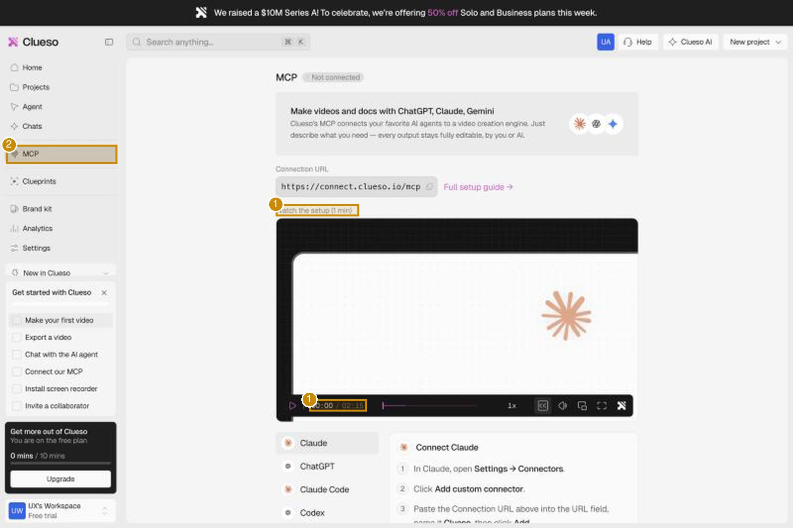
MCP
- 1D9Minor
"Watch the setup (1 min)" is a 2:15 video
The label and the video length disagree.
Fix: Fix the label.
Consistency
- 2D10Minor
A developer integration at the top level
MCP is in the main nav while the GitHub and Bitbucket connections live in Settings > Connections.
Fix: Group them under one Integrations area.
Grouping by user task
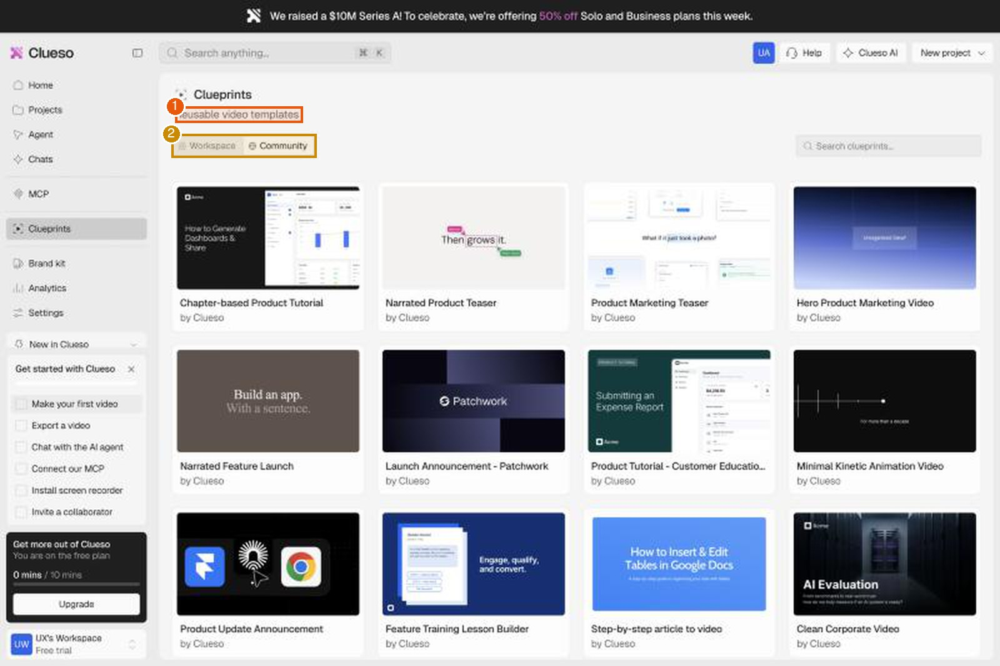
Clueprints
- 1D11Major
"Reusable video templates", while the editor also has Templates
Clueprints are full-video styles; editor Templates are intro and outro clips; Components are reusable groups. The help center needs a callout box to explain the difference.
Fix: Rename the editor items "Clip templates", and describe Clueprints as "Video styles" in UI copy.
Match with the real world
- 2D12Minor
The docs describe three tabs; the app shows two
Personal, Workspace and Community in the help center; Workspace and Community in the app.
Fix: Update the docs.
Help and documentation
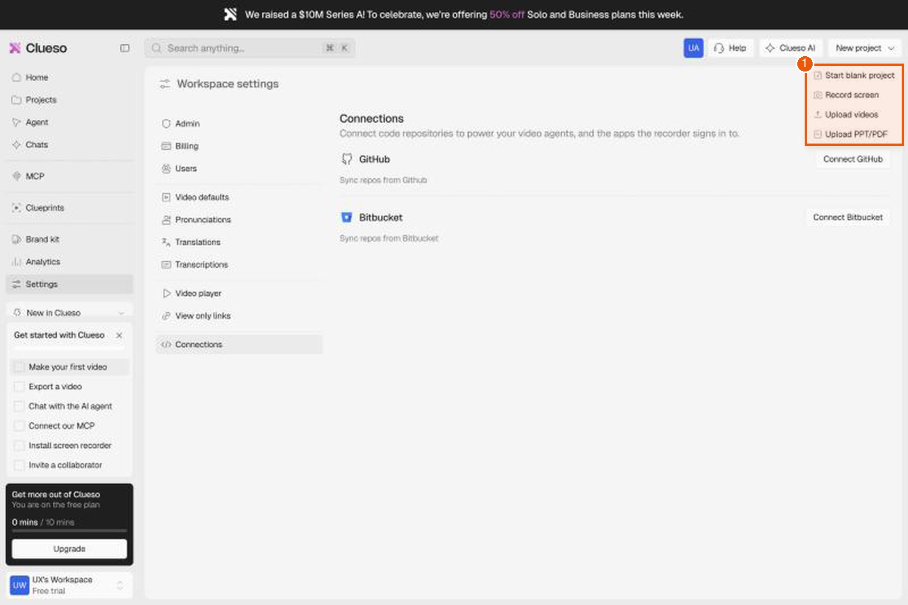
Header New project menu
- 1D13Major
Each entry point offers a different set of start options, with different labels
This menu lacks Create with prompt and Clueprints. "Upload PPT/PDF" here is "Upload slide decks" on Home. "Upload videos" is "Upload screen recording" in onboarding. "Record screen" is "Record your screen".
Fix: Define one creation menu and reuse it everywhere, with the same order and labels.
Consistency
Avatar menu
- 1D14Major
Settings are split across three places
Sidebar Settings holds workspace settings only. Profile settings is a modal in this menu, and that modal has its own Workspace tab. The help docs send users to the workspace switcher, which only lists workspaces.
Fix: Use one Settings area with Profile, Workspace, Billing and usage, Language, and Sharing sections.
Consistency
- 2D15Minor
Help is reachable five ways
Header Help, Help Center and Chat with Support in this menu, a floating bubble, and a footer link.
Fix: Keep one Help entry that opens a panel with docs, chat and what's new.
Minimalism
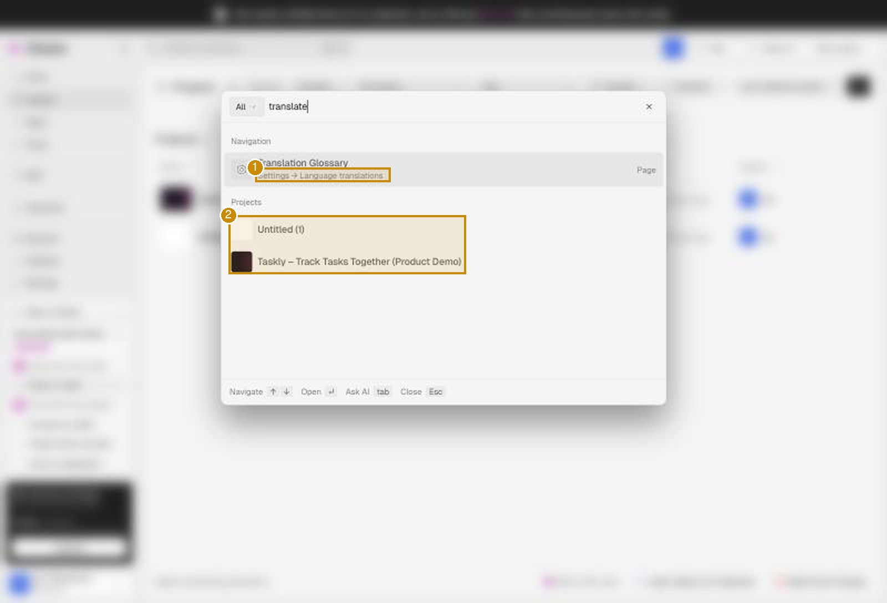
Command search for "translate"
- 1D16Minor
One page, four names
Search calls it "Settings → Language translations", the nav says "Translations", the page title says "Translation Settings", and pricing says "Translation glossary".
Fix: Call it Translation glossary everywhere.
Consistency
- 2D17Minor
Projects that don't match the query still show
Both projects are listed for "translate". There is also no action result such as "Translate a video".
Fix: Filter results and include actions.
Flexibility and efficiency
Settings, billing and account
The settings pages are tidy individually. The problems are a risky join rule, numbers that contradict the pricing page, and costs that only show up after the user has spent them.
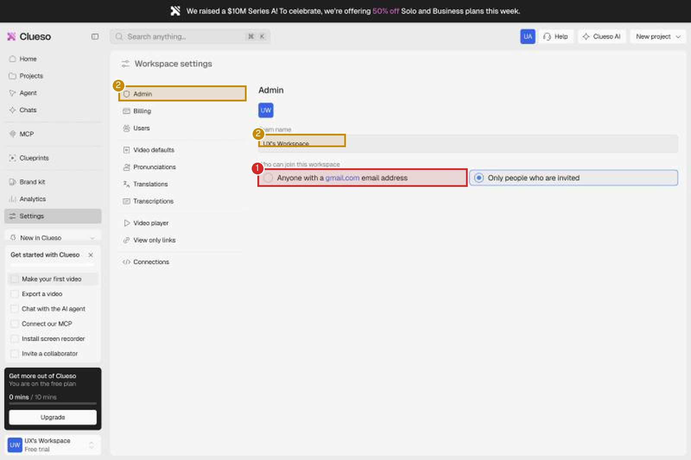
Workspace settings > Admin
- 1E1Critical
Offers to let anyone with a gmail.com address join
"Who can join this workspace: Anyone with a gmail.com email address". For a public email domain, choosing it would open the workspace to every Gmail user. I left it on Only people who are invited.
Fix: Never offer domain-based joining for public email domains, and add a confirmation step for any domain rule.
Error prevention, security
- 2E2Minor
Admin, /general, Team name
The nav label, URL and field name all differ for the same page, which is really General.
Fix: Label it General, and call the field Workspace name.
Consistency
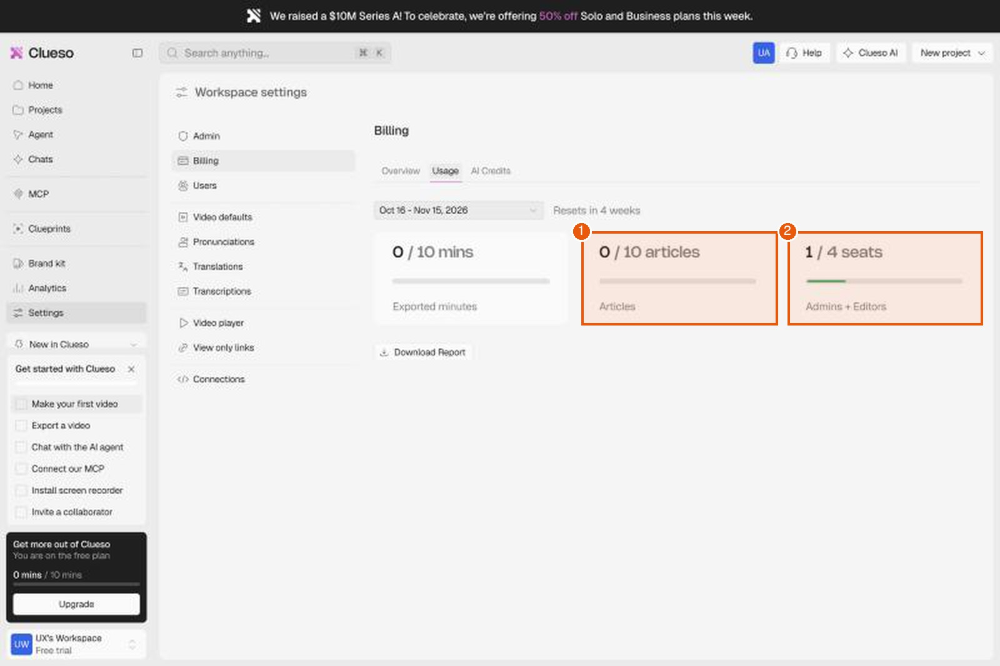
Billing > Usage
- 1E3Major
Article limit contradicts pricing
0 / 10 articles. The pricing card says 15 article exports a month for Free; the comparison table on the same page says 10.
Fix: Use one source of truth for plan limits.
Consistency
- 2E4Major
1 / 4 seats on a one-user plan
Pricing says Free is 1 user. Billing says "Upgrade to invite editors". Yet Users has an Invite users button and the checklist says Invite a collaborator.
Fix: Show the real seat limit, and explain on the Invite button what happens on Free.
Consistency
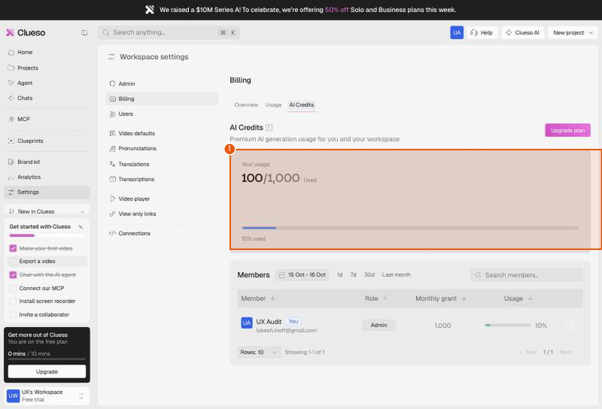
Billing > AI Credits after one prompt-to-video run
- 1E5Major
One video used a quarter of the month
Billing showed 100 of 1,000 credits used mid-build; the finished 57-second video reported 250 credits. No screen before the run mentioned credits.
Fix: Show remaining credits in the AI panel, an estimate before each run, and a warning at 80%.
Visibility of system status

AI Credits before use
- 1E6Major
No explanation of what costs credits
Prompts, edits and model choice all cost different amounts, and none of that is shown here.
Fix: Add a short "What uses credits" table.
Help and documentation
- 2E7Minor
Team table with sorting and pagination for one person
Enterprise UI shown to a solo user.
Fix: Show the table only when there are two or more members.
Minimalism
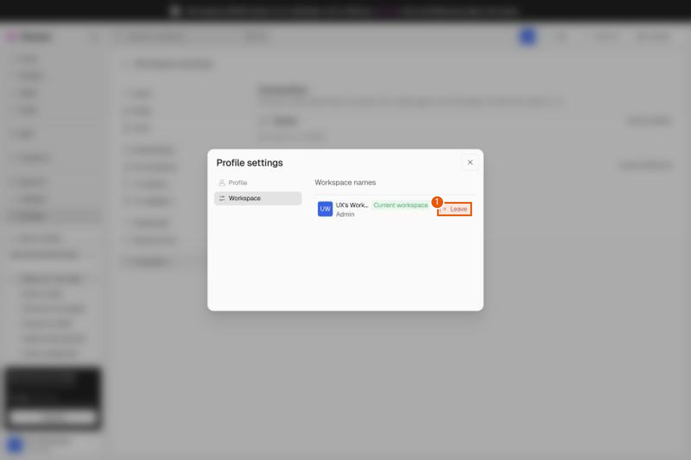
Profile settings > Workspace
- 1E8Major
"Leave" offered to the only admin of the only workspace
Leaving would orphan the workspace or lock the user out.
Fix: Disable it with an explanation ("Transfer admin or delete the workspace first").
Error prevention
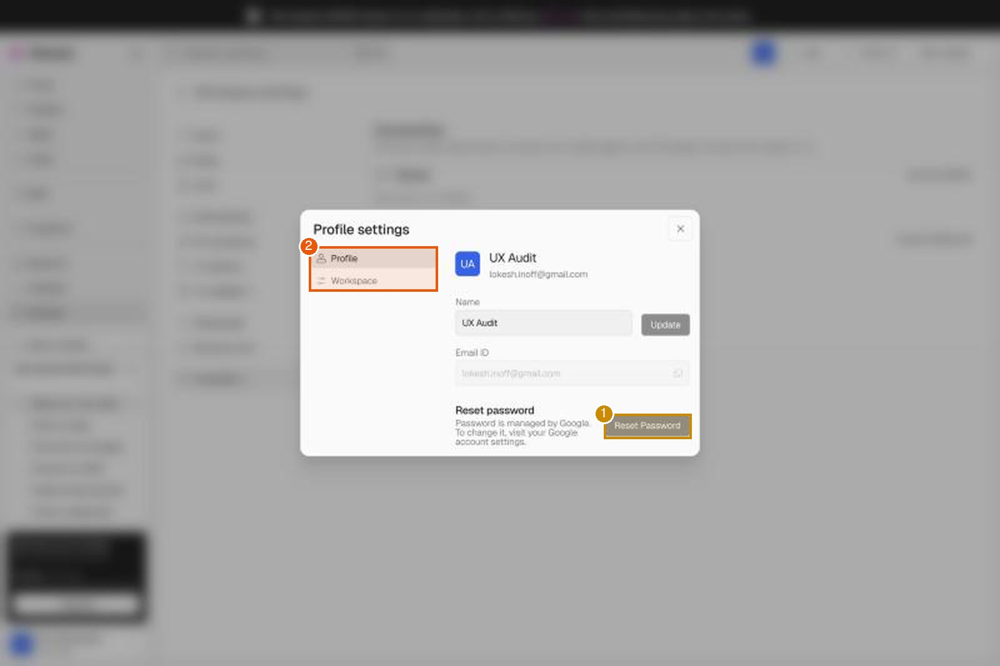
Profile settings > Profile
- 1E9Minor
Reset Password next to "Password is managed by Google"
The button looks active but cannot work for this account.
Fix: Hide it for accounts that sign in with Google or SSO.
Consistency
- 2E10Major
Profile lives in a modal with its own Workspace tab
This is the third settings location.
Fix: Fold it into the single Settings area.
Consistency
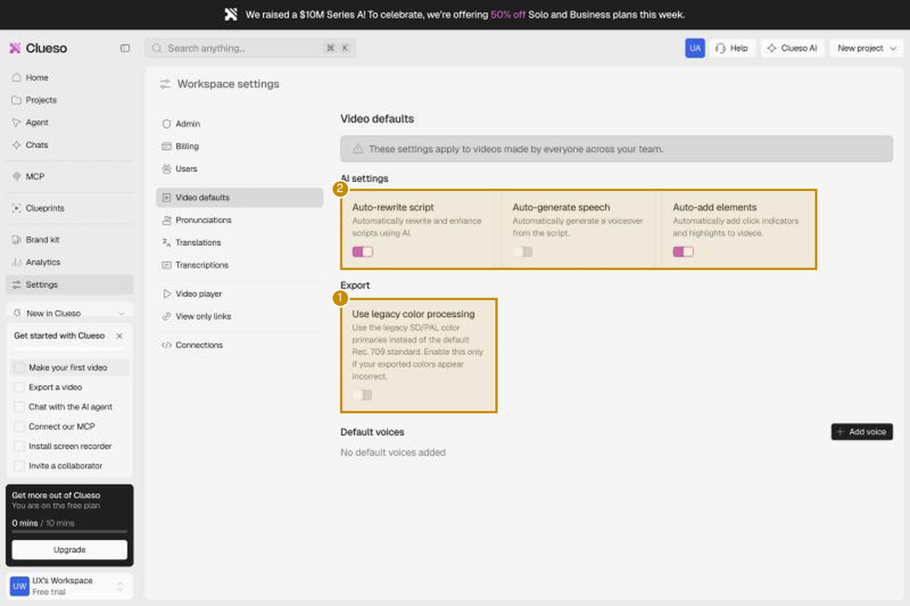
Video defaults
- 1E11Minor
Broadcast jargon in a default setting
"Use the legacy SD/PAL color primaries instead of the default Rec. 709 standard".
Fix: Move it under Advanced and lead with the symptom ("Colors look washed out after export?").
Match with the real world
- 2E12Minor
Toggles have no on or off text
State is shown by color alone.
Fix: Add text or a check mark to each state.
Accessibility
Appendix: editor (beyond navigation scope)
The editor is capable, and the script-first voiceover loop works. A new user lands in a blank canvas with eleven unlabeled tools, and a stuck preview made playback impossible until I reloaded the page.
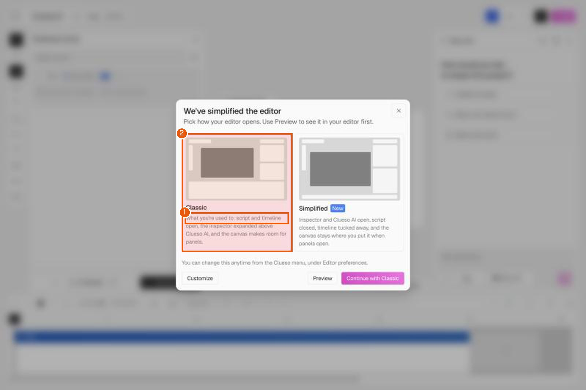
First time opening the editor
- 1F1Major
Tells a brand-new user what they are "used to"
"We've simplified the editor... Classic: What you're used to". This account had never opened the editor.
Fix: Show this only to accounts that used the old editor. New users get Simplified with no prompt.
Match with the real world
- 2F2Major
The complex option is the default
Continue with Classic is the primary button.
Fix: Default new users to Simplified.
Progressive disclosure
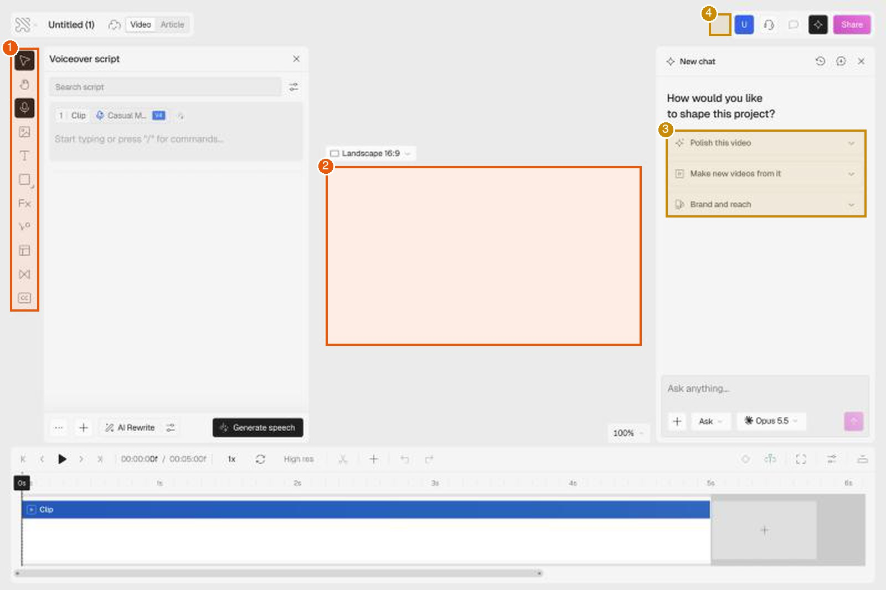
Blank project, Classic editor
- 1F3Major
Eleven icon-only tools
Tooltips appear on hover, but 26 of the 81 visible buttons (playback, undo and redo, script controls) have no accessible name at all.
Fix: Add labels to the rail (or an expand control) and aria-labels to every icon button.
Recognition rather than recall, accessibility
- 2F4Major
Blank canvas with no next step
There is no "Record, upload, or pick a template" prompt in the empty canvas.
Fix: Put the three start options in the empty canvas itself.
Help users get started
- 3F5Minor
AI suggests "Polish this video" for an empty project
The suggestions don't match the project's state.
Fix: Use suggestions that fit an empty project ("Draft a script from a topic").
Context
- 4F6Minor
Avatar is U here, UA elsewhere
Fix: Use one initials rule.
Consistency
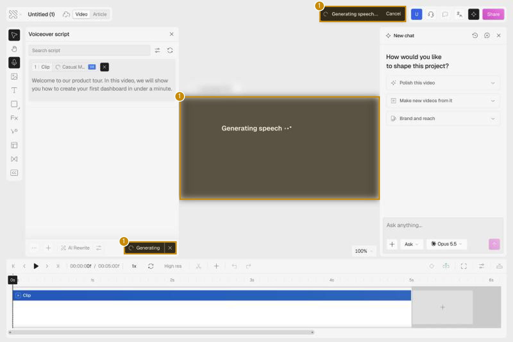
During Generate speech
- 1F7Minor
Three loaders and three cancel controls for one action
A toast, a canvas overlay and the button all show progress at once.
Fix: Show progress on the button only and keep the canvas usable.
Minimalism
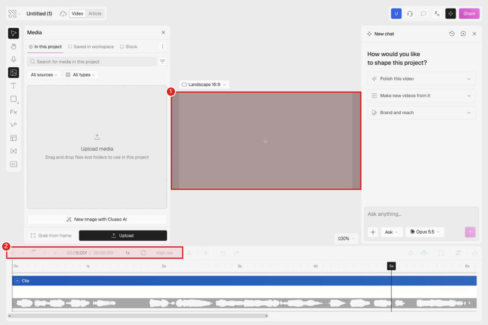
Over 60 seconds after speech finished
- 1F8Critical
Preview stuck on a spinner
The canvas never rendered and kept spinning. Reloading the page fixed it. The same spinner reappeared during AI generation.
Fix: Detect the stalled stream and reconnect, or show "Preview paused, Reload preview".
Visibility of system status, error recovery
- 2F9Critical
Playback disabled until reload
The console showed repeated EventSource failures (ERR_HTTP2_PROTOCOL_ERROR) and no message to the user. This may depend on the browser I used; verify in Chrome.
Fix: Show a reconnecting banner and retry with backoff.
Error recovery
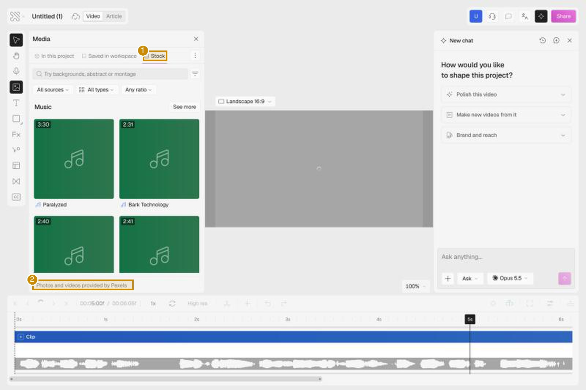
Media panel on first open
- 1F10Minor
Opens on the third tab (Stock), not the first
Upload is under "In this project", which isn't selected.
Fix: Open on In this project with Upload first.
Consistency
- 2F11Minor
"Photos and videos provided by Pexels" under a music list
The attribution doesn't match the content shown.
Fix: Show attribution per media type.
Match with the real world
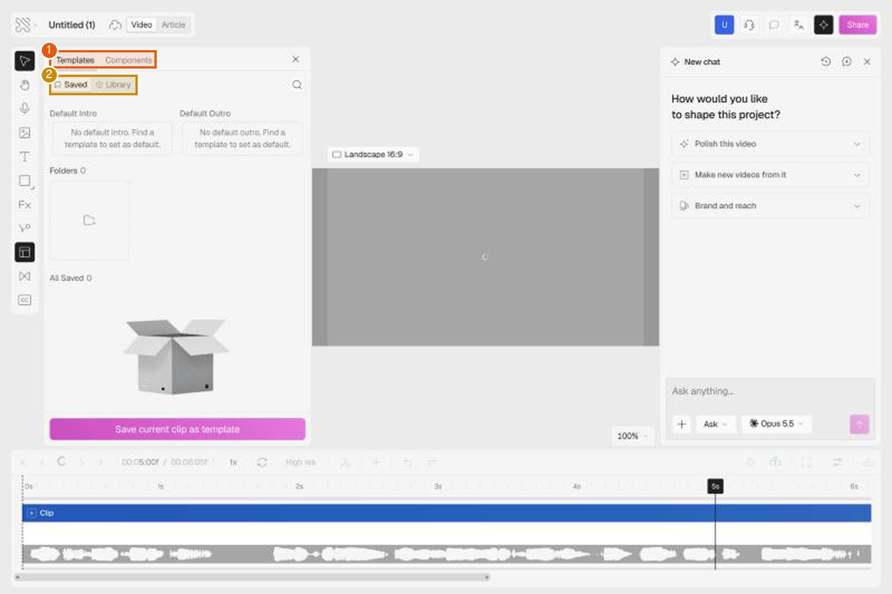
Template panel
- 1F12Major
Templates, Components and Clueprints
Three overlapping "reuse" concepts.
Fix: Use the naming in the label table below.
Match with the real world
- 2F13Minor
Opens on the empty Saved tab
New users see an empty box first.
Fix: Open on Library until something has been saved.
Help users get started
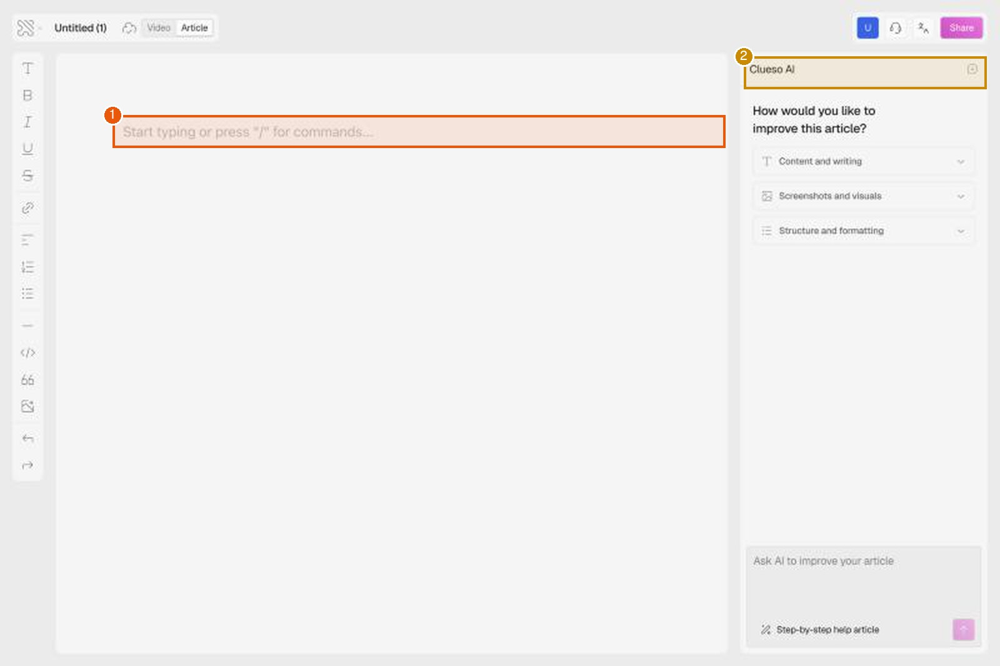
Article tab of the same project
- 1F14Major
Blank article even though the video has a script
The marketing site promises "your documentation is ready" too, but this project's article is empty, with no Generate article action.
Fix: Offer "Generate article from this video" in the empty state.
Help users get started
- 2F15Minor
A different AI panel
No model or mode controls, and a different layout.
Fix: Use the same panel everywhere.
Consistency
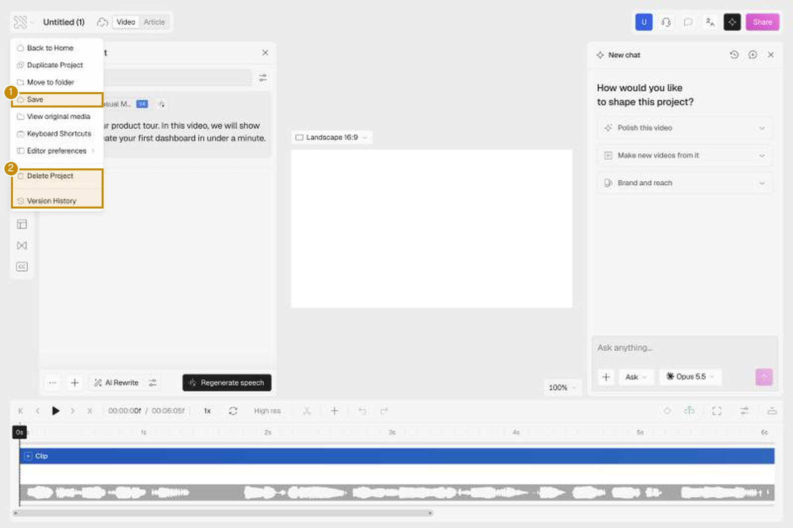
Project menu behind the logo
- 1F16Minor
Manual Save next to autosave
The cloud icon implies autosave, but Save sits in the menu.
Fix: Show a "Saved" state and remove the menu item.
Consistency
- 2F17Minor
Version History sits below Delete Project
A recovery tool is placed after the destructive action and is easy to miss.
Fix: Put Version History near the top and Delete last.
Error prevention
Appendix: AI video generation (beyond navigation scope)
The prompt-to-video plan was the best part of the session: six timed scenes with voiceover and visuals, and a clear approval step. What follows it is long and opaque.
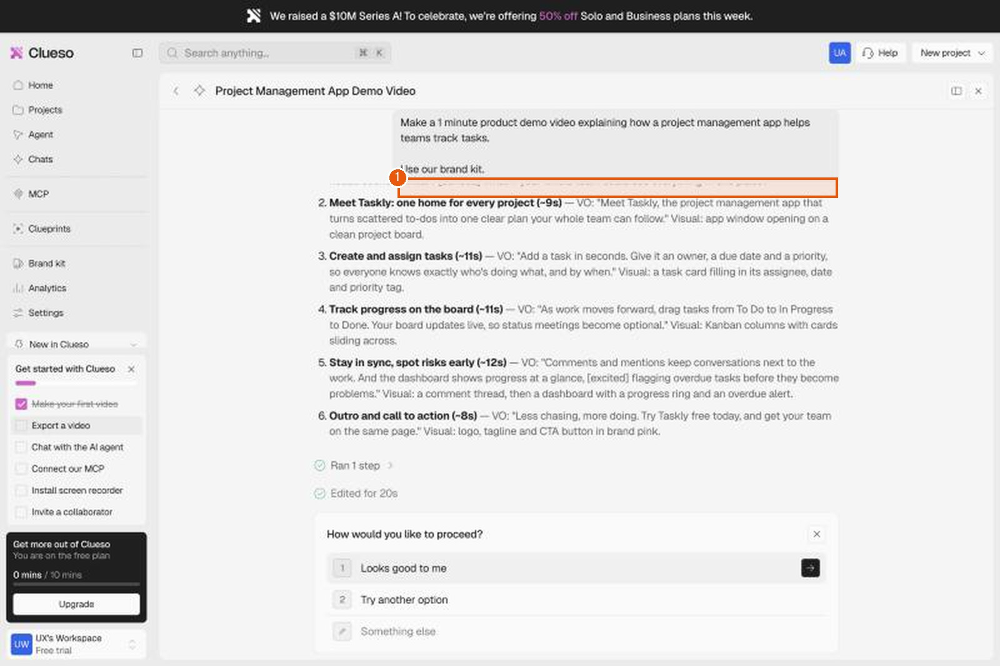
The AI's plan after my prompt
- 1G1Major
"Use our brand kit." was added to my prompt
My message gained a line I didn't write, which applied the gmail.com brand kit.
Fix: Show attached context as a removable chip, not inserted text.
User control and freedom
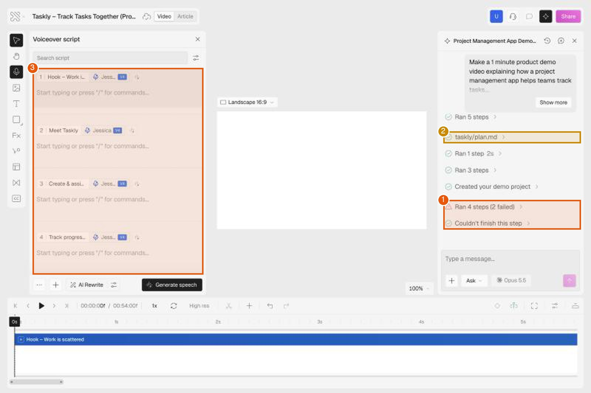
About 1 minute after approving
- 1G2Major
Alarming log while it recovers
"Ran 4 steps (2 failed)" with a red warning and "Couldn't finish this step". The agent recovered without telling the user.
Fix: Hide retries that recover. Show one plain status per scene.
Visibility of system status
- 2G3Minor
Internal files exposed
"taskly/plan.md" appears in the log.
Fix: Hide internal files from the log.
Match with the real world
- 3G4Major
The editor opens with empty scripts
The user is dropped into a half-built project.
Fix: Keep the user in a progress view until the first scene can play.
Visibility of system status

About 5 minutes in
- 1G5Major
No estimate and no end in sight
"Working for 4m 54s", then "Thinking for 8m 14s" when I stopped watching. There was no estimate and no per-scene progress.
Fix: Show "Scene 3 of 6, about 2 min left", and let the user leave and get a notification when it's done.
Visibility of system status
- 2G6Works well
The visuals are strong
The scenes that rendered look professional and on-message.
Fix: Lead with these in onboarding.
Delight
Sharing, export and project list
The share dialog is clean. It hides the costs and limits that matter most on the free plan.
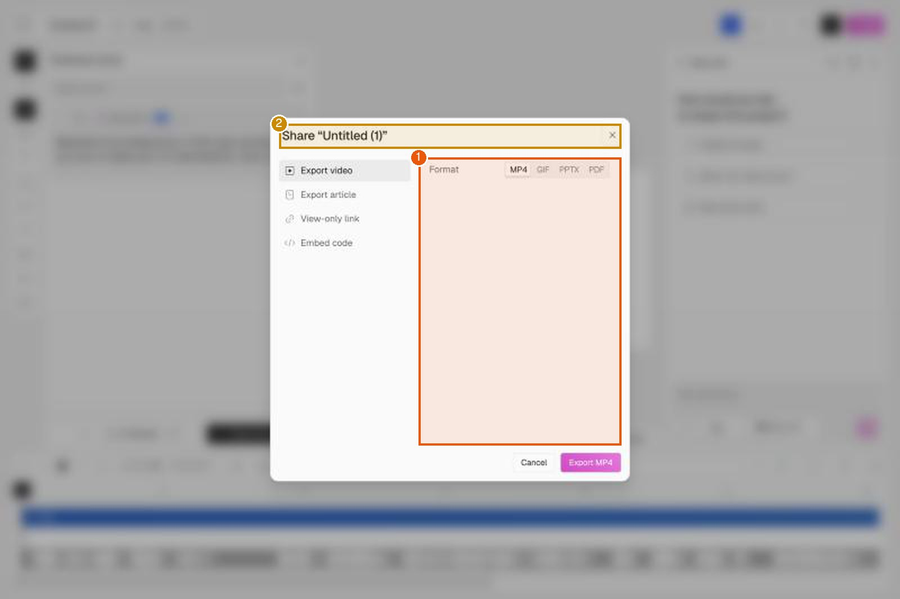
Share > Export video
- 1H1Major
No limits shown before export
Nothing mentions the 10 export minutes a month, the watermark or the 1080p cap.
Fix: Add a line such as "Uses about 1 of 10 free minutes; includes watermark".
Visibility of system status
- 2H2Minor
Share opens on Export
Most people who click Share want a link.
Fix: Open on View-only link.
Match with user expectations
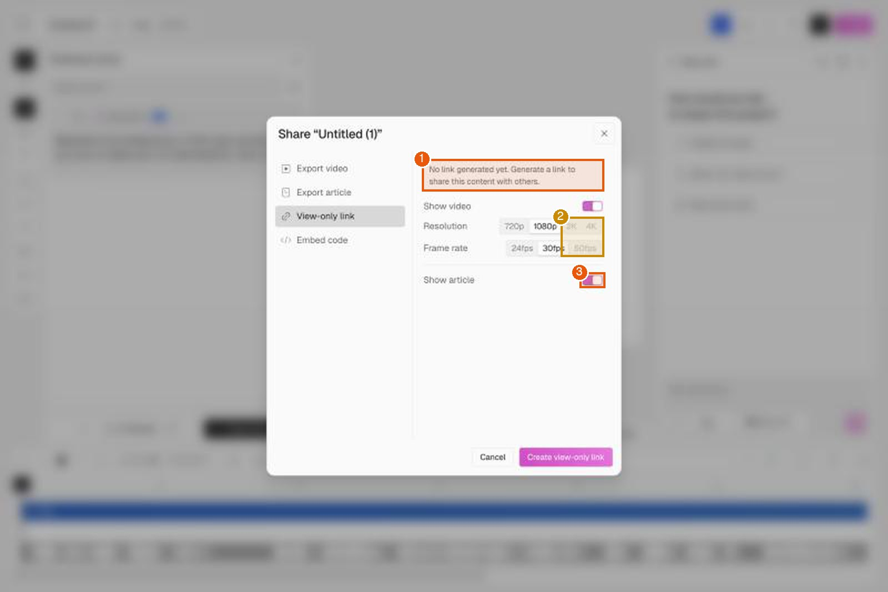
Share > View-only link
- 1H3Major
Creating a link uses export minutes, and the dialog doesn't say so
The help center says view-only links and embeds count toward the export limit.
Fix: State the cost on the button.
Visibility of system status
- 2H4Minor
2K, 4K and 60fps greyed out with no reason
There is no lock icon or tooltip naming the plan.
Fix: Add a lock and "Business plan".
Help and documentation
- 3H5Major
Show article is on, but the article is empty
Viewers would see a blank article.
Fix: Default it to off when the article is empty.
Error prevention

Projects with two items
- 1H6Major
The filter bar pushes the New folder button off screen
At 1294 px wide, the button is clipped to its icon.
Fix: Wrap the filters or collapse them into a Filter menu.
Layout
- 2H7Minor
Seven filters for two projects
Fix: Show filters progressively.
Minimalism
- 3H8Minor
Blank thumbnails
Command search shows thumbnails for the same projects, but this list doesn't.
Fix: Use the same thumbnail source.
Recognition
- 4H9Minor
Creator shown as "Ux"
The name is "UX Audit".
Fix: Show the full name.
Consistency
Framework scorecards
Each principle is scored against what I observed in the session: Meets, Partial, Fails or Not tested. Finding IDs link to the evidence above.
Microsoft Guidelines for Human-AI Interaction
18 guidelines from Amershi et al., CHI 2019, grouped by when they apply. This is the most widely used checklist for AI product UX. Source
| ID | Group | Principle | Clueso | Evidence | Findings |
|---|---|---|---|---|---|
| G1 | Initially | Make clear what the system can do | Partial | Home asks "What are we creating today?" and the AI panel offers Create a video, an animation or a Clueprint. The suggestions are generic, though, and nothing states limits such as length, languages or styles. | B19 |
| G2 | Initially | Make clear how well the system can do it | Fails | There are no quality caveats, and the model picker shows vendor names with no quality or speed labels. | C10 |
| G3 | During | Time services based on context | Partial | The plan approval comes at a natural break, which is good. The survey pop-up and the work-email toast interrupt mid-task. | C3 B4 |
| G4 | During | Show contextually relevant information | Fails | No credit cost is shown at the point of action, and the AI offers "Polish this video" for an empty project. | B20 E5 F5 |
| G5 | During | Match relevant social norms | Partial | The tone is professional, but raw voice tags like [curious] and [excited] show up in user-facing scripts. | |
| G6 | During | Mitigate social biases | Not tested | Voices and avatars weren't sampled across prompts. | |
| G7 | When wrong | Support efficient invocation | Partial | AI is reachable from Home, the header, the editor and ⌘K (Tab). It is split over six surfaces, though. | D3 |
| G8 | When wrong | Support efficient dismissal | Fails | The brand kit is applied by default and written into the prompt as text. It can only be removed with a small chip after it has already shaped the request. | C2 G1 |
| G9 | When wrong | Support efficient correction | Partial | Scripts are editable per clip, speech can be regenerated per clip, and Version History exists, but it sits below Delete. | F17 |
| G10 | When wrong | Scope services when in doubt | Meets | Ask mode proposed a plan, flagged "Taskly" as a stand-in name, and offered Looks good, Try another option, or Something else. | |
| G11 | When wrong | Make clear why the system did what it did | Partial | The plan explains the scene structure. The run log shows "2 failed" with no explanation. | G2 |
| G12 | Over time | Remember recent interactions | Not tested | Follow-up edits weren't tested in the same chat. | |
| G13 | Over time | Learn from user behavior | Not tested | This needs repeated use. | |
| G14 | Over time | Update and adapt cautiously | Not tested | This needs repeated use. | |
| G15 | Over time | Encourage granular feedback | Partial | Thumbs up and down appear on each AI message, but not per scene. | |
| G16 | Over time | Convey the consequences of user actions | Fails | Switching model or mode shows no effect on cost, time or quality. | C10 |
| G17 | Over time | Provide global controls | Partial | Video defaults has AI toggles (auto-rewrite, auto-speech, auto-elements), but there is no default model or autonomy setting. | E11 |
| G18 | Over time | Notify users about changes | Meets | A "New in Clueso" card and the What's new feed announce features. |
Agentic UX patterns
Patterns for agents that act on the user's behalf over long runs, from Smashing Magazine (Yocco, 2026), The Shape of AI (Campbell) and Jakob Nielsen's "Slow AI" (2025). Source
| ID | Group | Principle | Clueso | Evidence | Findings |
|---|---|---|---|---|---|
| A1 | Smashing | Intent preview, or plan summary, before acting | Meets | A six-scene plan with timings and voiceover lines appears for approval before anything is built. | |
| A2 | Smashing | Autonomy dial | Meets | Ask, Plan and Auto modes each have a one-line description. Internally they're labeled "Director autonomy mode". | D6 |
| A3 | Shape of AI | Cost estimate before running | Partial | The Home prompt shows nothing before the run (the video then cost 250 credits). The PDF ideas picker does show "about 150 credits" per video, and chats show each message's cost afterwards. | B20 E5 N9 |
| A4 | Slow AI | Run contract: time window, cost cap and definition of done | Fails | No duration, cost cap or finish condition was shown before approving. | |
| A5 | Slow AI | Three-layer progress (overall, current step, ETA) | Fails | Only "Working for 4m 54s" and "Thinking for 8m 14s". There's no scene count or ETA. | G5 |
| A6 | Slow AI | Progressive partial results | Meets | Scenes appeared in the editor as they were built. | G6 |
| A7 | Smashing | Action audit and undo | Partial | A step log and Version History exist. The log shows internal file names and failed retries. | G2 G3 |
| A8 | Smashing | Escalation pathway: ask rather than guess | Meets | "How would you like to proceed?" with three options. | |
| A9 | Slow AI | Stop-and-keep salvage points | Partial | A stop button is present. Whether partial work is kept wasn't tested. | |
| A10 | Slow AI | Resumption summary and completion notification | Not tested | I didn't leave and come back during a run. | |
| A11 | Shape of AI | Draft mode to explore cheaply | Fails | There is no low-cost preview before a full build, and the default model is the most expensive. | C10 |
User psychology principles
How Clueso's first session uses or works against well-known behavioral principles. Sources: BJ Fogg, Laws of UX, Nunes and Drèze (2006), Norton et al. (2012), Kahneman, NN/g. Source
| ID | Group | Principle | Clueso | Evidence | Findings |
|---|---|---|---|---|---|
| P1 | Fogg B=MAP | Ask when motivation is high and keep ability high | Fails | Motivation peaks at the end of onboarding, which is exactly when the recommended path makes the user install an extension. | B13 B17 |
| P2 | Hick's law | Fewer choices mean faster decisions | Fails | There are 6 start options, 6 AI models, 13 roles and 7 project filters. | B15 C10 B8 H7 |
| P3 | Jakob's law | Work the way familiar tools do | Meets | The left sidebar, the ⌘K search and the stepper all follow conventions. | |
| P4 | Cognitive load | Remove effort that doesn't help the user | Fails | Seven competing attention elements on the first Home view, and decorative panels on onboarding. | C6 B5 |
| P5 | Goal-gradient | Visible progress speeds completion | Partial | There is a progress bar, but the "Step 1 of 4" text is for screen readers only. | B6 |
| P6 | Endowed progress | A head start raises completion | Fails | The checklist starts at 0 of 6. "Account created" could be pre-ticked. | C4 |
| P7 | Zeigarnik effect | Unfinished tasks pull people back | Partial | The checklist exists but sits collapsed at the bottom of the sidebar. | C4 |
| P8 | IKEA effect | People value what they help build, if they finish it | Partial | The user shapes the plan and can edit scripts, but the build ran over 8 minutes and was still unfinished. | G5 |
| P9 | Foot-in-the-door | Small first commitment, larger asks later | Meets | Step 1 is a one-tap goal choice. | |
| P10 | Peak-end rule | Experiences are judged by the peak and the end | Fails | The peak (polished AI visuals) came after a 5-minute wait, and the session ended on an open-ended "Thinking..." status. | G5 |
| P11 | Default effect | Most people keep defaults, so defaults must be safe | Fails | Risky defaults: brand kit on, the most expensive model, the Classic editor, and Show article on for an empty article. | C2 C10 F2 H5 |
| P12 | Doherty threshold | Respond within 400 ms | Fails | A 20-second first load, a role list empty for about 2 seconds, and a preview stuck for over 60 seconds. | B3 B10 F8 |
| P13 | Labor illusion | Showing the work raises perceived value | Partial | The step log shows work happening, but leads with failures and internal files. | G2 G3 |
| P14 | Progressive disclosure | Core options first, advanced later | Fails | MCP and Agent are top-level, Settings shows team tables to a solo user, and broadcast color jargon is a default setting. | D10 E7 E11 |
| P15 | Social proof | Show what others choose at decision points | Partial | Testimonials sit on the login page, but none appear at decisions such as which start option is most popular. | A3 |
| P16 | Aesthetic-usability effect | Attractive output buys tolerance | Meets | The visuals are strong. That tolerance can hide the friction above in usability tests. | G6 |
Information architecture principles
Dan Brown's eight principles (2010), the four systems from Rosenfeld and Morville, and NN/g's research on information scent and navigation. Source
| ID | Group | Principle | Clueso | Evidence | Findings |
|---|---|---|---|---|---|
| I1 | Brown: Objects | Each object has one clear home and lifecycle | Partial | A project is called "guide" in URLs, and chats are a separate object from the project they create. | D3 |
| I2 | Brown: Choices | Offer only the choices that serve the task | Fails | Each entry point offers a different set of creation options. | D13 |
| I3 | Brown: Disclosure | Show enough to predict what's inside | Fails | "Agent" opens a sales page and "Analytics" opens a paywall, with no hint beforehand. | D1 D7 |
| I4 | Brown: Exemplars | Show examples of a category's contents | Meets | Clueprints and the onboarding gallery use thumbnails. | |
| I5 | Brown: Front doors | Every page tells you where you are | Partial | Deep links work, but the browser tab title stays "Clueso Platform" or shows a stale project name. | C12 |
| I6 | Brown: Multiple classification | Several ways to find things | Meets | Folders, filters, sorting and ⌘K search. | |
| I7 | Brown: Focused navigation | Don't mix kinds of things in one menu | Fails | One flat list mixes objects (Projects), AI modes (Agent, Chats), integrations (MCP), assets (Brand kit) and admin (Settings). | D2 D10 |
| I8 | Brown: Growth | The structure must absorb new features | Fails | There are already 9 nav items plus 4 widgets; every new AI feature has become a new top-level item. | |
| I9 | R&M: Organization system | One clear organization scheme per level | Fails | A hybrid of task, object, brand metaphor (Clueprints) and technology (MCP). Rosenfeld and Morville warn that mixing schemes almost guarantees confusion. | |
| I10 | R&M: Labeling system | Consistent, user-language labels | Fails | One page has four names, and there are three labels each for upload and record. | D16 D13 |
| I11 | R&M: Navigation system | Global, local and contextual navigation work together | Partial | The active state is clear, but settings are split across three places. | D14 |
| I12 | R&M: Search system | Search reaches content, features and settings | Partial | ⌘K finds settings and projects but not actions, and it doesn't filter non-matching results. | D17 |
| I13 | NN/g: Information scent | Labels predict their destination | Fails | "Clueprints", "MCP" and "Agent" don't tell a new user what's behind them. | D11 |
| I14 | Microsoft: Settings guidance | Settings holds rarely changed options and is pinned last | Partial | Settings is near the bottom, but configuration such as Brand kit and MCP sits in the main nav. |
Onboarding best practices
From NN/g (onboarding, empty states, forms), ProductLed's Bowling Alley framework, the Appcues checklist guide and Userpilot's welcome-survey research. Source
| ID | Group | Principle | Clueso | Evidence | Findings |
|---|---|---|---|---|---|
| O1 | NN/g, ProductLed | 3 or fewer questions before the first action | Fails | Goals, name, role and workspace name, plus a separate profile screen: 5 screens. | B1 B7 B12 |
| O2 | Userpilot | Every answer visibly changes what comes next | Partial | Goals moved the "Recommended" tag, but prompt suggestions and the brand kit ignored them. | B19 C7 |
| O3 | NN/g | Explain why each question is asked | Partial | There's one generic line: "The more we know, the more Clueso feels made for you." | |
| O4 | NN/g | Questions are skippable | Partial | "I'm just exploring" works at step 1, but role is required at step 2. | B9 |
| O5 | NN/g forms | Derive data instead of asking for it | Fails | The name is asked for even though Google already supplied it. | B1 |
| O6 | ProductLed | End onboarding on doing, not a dashboard | Fails | The recommended last step ends in an extension install. | B17 |
| O7 | NN/g empty states | Empty states teach and offer a next step | Fails | A blank canvas, a blank article, and Projects leading with New folder. | F4 F14 C11 |
| O8 | Appcues | Checklist has 3 to 5 items and completes on real events | Fails | 6 items; "Make your first video" was ticked by a blank project. | C4 |
| O9 | ProductLed | No pricing or promotions before value | Fails | A sale banner and an upgrade card on day one. | C6 |
| O10 | NN/g latency | Waits over 10 s get percent-done and a way to cancel | Fails | The 20-second app load and the 8-minute build show no percentage; speech generation has a cancel option. | B3 G5 |
| O11 | Userpilot | "How did you hear about us" stays out of onboarding | Fails | It pops up on the first Home view. | C3 |
Journey map: first session
The person: a product or customer-education manager, new to Clueso, on the Free plan, who wants a product demo and an SOP. The scenario: sign up and get one shareable video in the first session. The structure follows NN/g's journey-mapping components: phases, actions, thoughts, emotions and opportunities.
| Phase | Doing | Thinking | Feeling | Pain points | Opportunity |
|---|---|---|---|---|---|
| Sign up | Signs in with Google | "Easy, one click." | +1 | Personal-email warning | Keep it as is; drop the work-email nag |
| Profile | Types a name Google already has | "Didn't I just do this?" | -1 | B1 | Prefill from Google |
| Load | Waits for a blank screen | "Is it broken?" | -1 | B3 | Skeleton screen with a status line |
| Goals | Picks Product demos and SOPs | "OK, it's asking what I need." | +1 | Use the answers visibly | |
| Profile again | Retypes name, waits for the role list | "Again?" | -1 | B7 B10 | Merge or remove |
| First video | Clicks the recommended option and gets an install wall | "I have to install something now?" | -2 | B13 B17 | Pre-filled prompt or sample project |
| Home | Survey pop-up, banners, model menu | "Too much going on." | -1 | C3 C6 C10 | One clear next step |
| Editor | Blank canvas, unlabeled icons | "Where do I start?" | -1 | F1 F3 F4 | Empty-state call to action, simplified editor |
| Voiceover | Types a script; speech is generated | "Nice, that was quick." | +1 | Celebrate it | |
| Preview stuck | Can't play until reload | "It froze." | -2 | F8 F9 | Auto-reconnect |
| AI plan | Reads a good 6-scene plan | "This is impressive." | +2 | G1 | Show the cost before approving |
| Waiting | Watches "Working for 8 min" | "How long will this take?" | -1 | G2 G5 | Scene progress and ETA, notify on finish |
| Result | Sees polished scenes forming | "Looks professional." | +1 | Make this the peak, sooner | |
| Share | Opens Share; limits are hidden | "Will this cost me?" | -1 | H1 H3 | State the minutes and watermark up front |
Competitor onboarding benchmark
Built from public help centers, pricing pages and published teardowns. I didn't sign up for any competitor; unverified items are marked as such.
| Product | Card needed | Questions (screens) | Install before first value | First run | How limits are shown |
|---|---|---|---|---|---|
| Clueso | No | Goals, name, role, workspace, plus a profile screen (5) | Extension for the recommended path | Prompt on Home, a hidden checklist | Minutes in the sidebar; credits only in Billing |
| Loom | Free plan; card unverified | Use case, role, workspace, invite, recorder (3 to 4); "record now" lets users skip | Extension or desktop app, with a skip option | 4-item checklist and role videos | Video counter next to search |
| Descript | No | Role, use case, content type, invite (4) | None (web) | "Generate video" call to action, no tour | Credits on the dashboard before any output |
| Synthesia | No | Department, video type, audience, invite (about 8 screens to value) | None | Video type becomes a pre-filled prompt | Pricing screen before the product |
| HeyGen | No | Plan, personalize, avatar, voice (4); "just exploring" skip | None (webcam) | Setup strip; first video locked behind face recording | Crown icons, upgrade walls |
| Guidde | No | Unverified; create or join a workspace | Extension; sign-up starts from it | Capture from the extension | 25 editable videos after the trial |
| Scribe | Unverified | Unverified | Extension | Record, then an auto-generated guide | Gates on export, not on creating |
| VEED | No | Use case, role, how-heard, email preferences | None | Two actions: Generate, Upload | Pricing before the dashboard |
Pick a type, get a pre-filled prompt
Synthesia, Descript and VEED turn the use-case answer into the first prompt.
Clueso: Clueso asks for goals but then shows generic chips ("Facts about Lewis Hamilton").
Capture tools gate first value on an extension
Guidde, Scribe, Tango and Loom all need one. Only Loom offers a skip, and Guidde and Scribe start sign-up from the extension.
Clueso: Clueso is browser-first, so it can beat these tools by not requiring the extension for a first video.
Visible progress during generation
Synthesia and VEED show a percentage; reviewers criticise its absence elsewhere.
Clueso: Clueso shows elapsed time only.
Pricing before value is the most criticised pattern
Synthesia, VEED and Descript are faulted for it; Loom and Guidde upsell after the first creation.
Clueso: Clueso shows a sale banner and an upgrade card on the first Home view.
Free limits shown as simple counters
Loom counts videos and Tango counts workflows. Soft walls (draft but can't publish) are rated better than hard ones.
Clueso: Clueso splits limits into minutes, articles and credits, and shows the credits only in Billing.
Conflicting public limits erode trust
Guidde and Tango publish different caps in different places.
Clueso: Clueso does the same: 10 vs 15 articles, 1 vs 4 seats, 40+, 80+ and 150+ languages.
Light checklists, tours after activation
Loom has 4 items and HeyGen 4 steps; Synthesia's tour comes after the first video.
Clueso: Clueso has 6 items, hidden, ticked by a blank project.
What to ask in onboarding, and when
The rule, from NN/g, ProductLed and Userpilot: ask a question only if its answer changes what the user sees next, and say how it will be used. Otherwise derive it, defer it or drop it. Canva asks 1 question, Loom 1 plus an optional follow-up, and Airtable 3.
| Question | When to ask | What the answer should change | Clueso today |
|---|---|---|---|
| Goal or use case | Onboarding, step 1 | Start options, prompt suggestions, Clueprint picks and checklist items | Asked first (good), but only changes the "Recommended" tag |
| First-video method | Last step, and it should start the action | Opens the recorder, the uploader or a pre-filled prompt | Asked, but the recommended option needs an extension |
| Name | Never; take it from Google or SSO | Avatar, workspace default name | Asked twice |
| Role | Optional, only if it changes content | Example prompts, sample project, checklist variant | Required; changes nothing visible |
| Workspace name | Default it silently; rename when inviting | Nothing on day one | A full step |
| Company website / brand | When the user opens Brand kit or before the first export | Logo, colors and fonts scraped from the real site | Never asked; auto-built from gmail.com |
| Team size | At invite or upgrade time | Plan recommendation | Not asked (good) |
| Invite teammates | After the first video, at share time | Reviewer or editor seat offer | Checklist item on day one |
| How did you hear about us | After activation, by email or a micro-survey | Nothing in the product | A pop-up on the first Home view |
| Experience level | Infer it from behavior | How much guidance to show | Not asked (good) |
Proposed information architecture
The current sidebar groups items by how Clueso is built: Agent, Chats, MCP and Clueprints are each separate systems. The proposal groups them by what the user is trying to do: make something, find their work, reuse assets, connect tools.
Today
Sidebar ├ Home (prompt + start chips) ├ Projects ├ Agent ← Enterprise sales page ├ Chats ├ MCP ├ Clueprints ├ Brand kit ├ Analytics ← locked on Free ├ Settings (workspace only, 10 pages) ├ New in Clueso · Checklist · Upgrade └ Workspace switcher Header ├ Search ⌘K ├ Avatar → Help Center, Profile │ settings (modal), Chat with │ Support, Sign out ├ Help ├ Clueso AI (panel) └ New project ▾ (4 options)
Proposed
Sidebar ├ Create │ └ one prompt + Record · Upload │ video · Slides/PDF · Clueprint · │ Blank (same menu everywhere) ├ Projects │ └ All · Folders · versions grouped ├ Agent (open on Free) │ └ Give a task · task history │ (was Chats) · auto-update 🔒 ├ Analytics (🔒 Free shows a sample) │ └ All videos · drill into one ├ Library │ ├ Clueprints │ ├ Clip templates · Components │ ├ Brand kit │ └ Media ── bottom ── ├ Usage meter (minutes + credits) ├ Integrations (Chrome extension, │ MCP, GitHub, Bitbucket) ├ Settings │ ├ Profile │ ├ Workspace · Members │ ├ Plan and usage │ ├ Language and voice │ │ (pronunciation, transcription │ │ keywords, translation glossary) │ ├ Video defaults │ └ Sharing (player, view-only links) └ Help (docs, chat, what's new) Everywhere: one Clueso AI panel, with recent agent tasks
| Feature | Where it is today | Where it should go | Why |
|---|---|---|---|
| Home prompt, Chats, header Clueso AI, editor chat, Article copilot | Sidebar items, header button, inside editor | One AI panel component everywhere; Chats becomes the Agent task list | Six surfaces for one capability |
| Agent | Main sidebar, 3rd item (a Book a demo page) | Keep, open it on Free as a usable page with the task history; lock only paid abilities | A usable feature instead of a sales page |
| MCP | Main sidebar | Integrations, next to GitHub, Bitbucket and the Chrome extension | Developer setup, done once |
| Connections (GitHub, Bitbucket) | Settings | Integrations | Same job as MCP |
| Clueprints, Templates, Components, Brand kit, Media | Sidebar (2), editor panels (3) | Library section: Video styles, Clip templates, Components, Brand kit, Media | All are reusable assets |
| Analytics | Main sidebar, locked on Free | Keep as a workspace-wide dashboard; lock badge and labeled sample on Free; project pages link to filtered views | It covers all videos at once, so it needs its own place |
| Profile settings | Avatar menu modal | Settings > Profile | One settings location |
| Pronunciations, Transcriptions, Translations | Three separate settings pages | Settings > Language and voice (three tabs) | Same mental model: teach the AI your words |
| Video player, View only links | Settings | Settings > Sharing | Both control what viewers see |
| Billing, Usage, AI Credits | Settings > Billing tabs | Settings > Plan and usage, plus a usage meter in the sidebar | Usage should be visible where it's spent |
| Help Center, Chat with Support, Help, bubble, footer | Five places | One Help button | Help shouldn't be a decision |
| Get started checklist | Collapsed at bottom of sidebar | Card on Home until done | Onboarding must be seen to work |
Label fixes
| Today | Use instead | Reason |
|---|---|---|
| Free trial / free plan / Free | Free plan | There is no trial period |
| Agent / Chats / Clueso AI / Director | Clueso AI (chat); Clueso Agents (Enterprise automation) | One name per concept |
| Templates (editor) | Clip templates | Separates them from Clueprints |
| Clueprints, "Reusable video templates" | Clueprints, "Video styles" | Clueprints set the look of a whole video |
| Upload slide decks / Upload PPT/PDF | Upload slides or PDF | One label everywhere |
| Upload videos / Upload screen recording / Upload a video | Upload video | One label everywhere |
| Record screen / Record your screen | Record screen | One label everywhere |
| Translations / Translation Settings / Language translations / Translation glossary | Translation glossary | Matches pricing and docs |
| Transcriptions / Transcription Keywords | Transcription keywords | Says what the page does |
| Admin (settings page) / Team name | General / Workspace name | "Admin" is a role, not a page |
| Opus 5.5, Sonnet 5.5, Astra 6... | Quality: Fast / Best (model under Advanced) | Users choose outcomes, not vendors |
| guide (in URLs) | project | Matches the UI |
| 40+ / 80+ / 150+ languages | One verified number | Credibility |
Proposed onboarding
This follows the question rubric and competitor patterns above. Synthesia, Descript and VEED turn the use-case answer into a pre-filled prompt, Loom lets users skip straight to recording, and every published competitor skips the card. Onboarding should feel like running downhill: one question with a visible reason, then a clear picture of what the product does, then the real product, personalized. Building a video belongs to the product, not to onboarding, because a 10-minute build inside onboarding makes the first minutes feel like work.
- One question"What will you mostly make?" with 4 options, and the reason shown on screen ("so we can show you a relevant example and set up your Create page"). The name comes from Google, so there's no profile, role, workspace or survey screen.
- Show, don't askA before-and-after for that answer: what you bring (a rough recording) and what Clueso makes (a polished video and a step-by-step guide), plus how it works in three lines. Nothing is built, spent or waited for.
- Create, personalizedThe prompt placeholder and suggestions come from the answer, and a one-line "how it works" strip shows on the first visit. The user starts when ready; the cost and approval step comes with their first real build.
- Contextual setup laterBrand when they first build or share, the team when they invite, the extension when they record with highlights, and an upgrade only at a real limit.
Roadmap
Quick wins, 1 to 2 sprints
- Remove the "Anyone with a gmail.com address" join option for public domains (E1).
- Stop building a brand kit from public email domains; keep the brand kit chip off until a brand is confirmed (C2, C7).
- Prefill name from Google and delete the duplicate name step (B1, B7).
- Show the "simplified editor" modal only to existing users; default new users to Simplified (F1, F2).
- Show credit and export-minute costs next to Create, Export and Create view-only link (B20, H1, H3).
- Use one plan label, and make in-app limits match the pricing page (C5, E3, E4).
- Move the "How did you hear about us" survey to after the first export (C3).
- Add aria-labels to the 26 unlabeled editor buttons, and make sidebar items real links (F3).
- Fix the projects filter overflow and the MCP video length label (H6, D9).
Next, 1 quarter
- Restructure the sidebar into Create, Projects, Library, with Integrations, Settings and Help at the bottom (see the proposed sitemap).
- Use one AI panel component across Home, editor and article; fold Chats into its history.
- Merge the three settings locations into one.
- Detect and recover from preview and stream stalls with a visible reconnect state (F8, F9).
- Add a Generate article from video empty state (F14).
- Define one creation menu and reuse it everywhere (D13).
Strategic
- Goal-driven onboarding where the first action needs no install, a storyline and its cost appear within about a minute (as observed), and the build runs in the background with a notification.
- Replace the model picker with outcome-based quality settings and per-run credit estimates.
- Per-scene progress, time estimates and notifications for AI generation.
- Run the usability test, tree test and card sort below before and after the IA change.
Sources
Research agents fetched each page and checked the claims against it. Exceptions: Dan Brown's original PDF returned a 404, so the summary page is used. The Rosenfeld and Morville text is the 1st edition. Some competitor details came only from search snippets and are marked unverified in the benchmark.
AI and agents
- Amershi et al., Guidelines for Human-AI Interaction (CHI 2019)
- Microsoft HAX Toolkit
- Google PAIR, People + AI Guidebook
- NN/g, A Concrete Definition of an AI Agent (2026)
- NN/g, Adding UI Controls to Prompting (2024)
- NN/g, Prompt Suggestions (2025)
- NN/g, Humanizing AI Is a Trap (2026)
- Smashing Magazine, Designing for Agentic AI (2026)
- The Shape of AI (Emily Campbell)
- Jakob Nielsen, Slow AI: Designing User Control for Long Tasks (2025)
- NN/g, Response Times: The 3 Important Limits
- NN/g, Progress Indicators Make a Slow System Less Insufferable
Onboarding and psychology
- BJ Fogg, Behavior Model
- Laws of UX (Hick, Jakob, goal-gradient, Zeigarnik, peak-end, Doherty...)
- Nir Eyal, Hook Model
- Endowed progress (Nunes and Drèze 2006), summary
- NN/g, Mobile-App Onboarding
- NN/g, Onboarding Tutorials vs. Contextual Help
- NN/g, Designing Empty States
- NN/g, Website Forms Usability
- NN/g, Progressive Disclosure
- ProductLed, Bowling Alley framework
- Appcues, Checklist best practices
- Userpilot, Welcome surveys
Information architecture and journeys
- Dan Brown, Eight Principles of IA (summary)
- Rosenfeld and Morville, organization schemes (1st ed. text)
- NN/g, IA vs. Navigation
- NN/g, Information Scent
- NN/g, Left-Side Vertical Navigation
- NN/g, Flat vs. Deep Hierarchies
- NN/g, Card Sorting
- NN/g, Tree Testing
- NN/g, Journey Mapping 101
- NN/g, 10 Usability Heuristics
- Microsoft, Guidelines for app settings
- Christensen Institute, Jobs to Be Done
Competitor benchmark (public sources, no sign-ups)
Validation plan
These findings come from an expert review. Before shipping the larger changes, test them with 5 to 8 participants per main persona (customer education or L&D, and product managers or product marketers). Use moderated think-aloud sessions of 40 minutes, recording task success, time, first click and a single ease question (1 to 7) per task, and SUS at the end.
| # | Task (as said to the participant) | What it tests |
|---|---|---|
| 1 | You just signed up. Make a short video that shows how to sign up for your own product. | Time to a playable draft; whether they hit the extension wall |
| 2 | Make your videos use your company's colors and logo. | Finds Brand kit; notices the auto-filled one |
| 3 | How many more videos can you export this month? | Finds Usage; understands minutes vs credits |
| 4 | Add a teammate who can only leave comments. | Settings > Users; reviewer seats |
| 5 | Turn your video into a written help article. | Discovers the Article tab and how to generate it |
| 6 | Send your manager a link to watch the video. | Share > View-only link; reacts to the cost |
| 7 | Make a Spanish version of your video. | Finds Translate; distinguishes it from the glossary |
- Tree test: today's navigation against the proposed one, using the seven tasks above, between-subjects. Don't use category labels in the task wording, and pilot it qualitatively first (NN/g). Tool vendors such as Maze suggest about 50 participants per group; that figure is unverified.
- Open card sort first: about 25 feature cards (Clueprints, Clip templates, Components, Brand kit, MCP, Pronunciations and so on). Let users name their own groups, then validate the proposed groups with the tree test. NN/g recommends at least 15 participants for a qualitative sort and 30 to 50 for a quantitative one.
- Funnel metrics: signup to first played video, signup to first export, share of users who hit the extension modal, and AI runs abandoned before completion.
Method and limits
A single session on 16 Oct 2026, in an embedded Chromium browser at about 1294 × 863 px, with a new free-plan account created through Google sign-in. Methods: a cognitive walkthrough of the first session, a heuristic review, an inventory of every navigation item and settings page, and spot checks of markup, the console and network traffic. In a second pass, research agents gathered primary sources. The findings were then scored against Microsoft's 18 Human-AI guidelines, agentic UX patterns, 16 psychology principles, Dan Brown's and Rosenfeld and Morville's IA principles, and onboarding best practice, and benchmarked against 7 competitors. Every source is listed under Sources.
Scope. At your direction, the audit centers on the navigation layer: the layout, entry points, the left nav, and how features connect. The editor and AI-generation notes are kept as an appendix. Not tested: real screen recording with the Chrome extension, uploading a video file, actual exports (to avoid spending export minutes), collaboration with a second user, mobile layouts, and Chrome itself. The preview stall (F8, F9) should be reproduced in Chrome before it is prioritized.
Left in the account: profile name "UX Audit", workspace "UX's Workspace", seven projects (test, AI-made, PDF-based and a Spanish translation), three chats, and about half of the month's AI credits used. No exports, links, invites or payments were made; the invite dialog was opened and closed without sending.